| Nom | Intitulé | Type | Moy. | E.-T. | Q1 | Q2 | Q3 | |
|---|---|---|---|---|---|---|---|---|
| VegPct | VegPct | Végétation (%) | VD | 35,1 | 18,6 | 20,3 | 33,8 | 49,0 |
| HABHA | HABHA | Habitants au km2 | VC | 87,8 | 74,0 | 36,9 | 68,4 | 120,5 |
| AgeMedian | AgeMedian | Âge médian des bâtiments | VC | 52,1 | 25,2 | 37,2 | 49,0 | 61,0 |
| Pct_014 | Pct_014 | Moins de 15 ans (%) | VE | 15,9 | 5,3 | 12,5 | 15,9 | 19,3 |
| Pct_65P | Pct_65P | 65 ans et plus (%) | VE | 14,9 | 8,3 | 9,6 | 13,9 | 18,2 |
| Pct_MV | Pct_MV | Minorités visibles (%) | VE | 21,0 | 16,4 | 8,3 | 17,2 | 29,6 |
| Pct_FR | Pct_FR | Personnes à faible revenu (%) | VE | 23,6 | 16,0 | 11,1 | 21,3 | 33,7 |
7 Régression linéaire multiple
Dans ce chapitre, nous présentons la méthode de régression certainement la plus utilisée en sciences sociales : la régression linéaire multiple. À titre de rappel, dans la section 4.4, nous avons vu que la régression linéaire simple, basée sur la méthode des moindres carrés ordinaires (MCO), permet d’expliquer et de prédire une variable continue en fonction d’une autre variable. Toutefois, quel que soit le domaine d’étude, il est rare que le recours à une seule variable explicative (X) permette de prédire efficacement une variable continue (Y). La régression linéaire multiple est simplement une extension de la régression linéaire simple : elle permet ainsi de prédire et d’expliquer une variable dépendante (Y) en fonction de plusieurs variables indépendantes (explicatives).
Plus spécifiquement, nous abordons ici les principes et les hypothèses de la régression linéaire multiple, comment mesurer la qualité d’ajustement du modèle, introduire des variables explicatives particulières (variable qualitative dichotomique ou polytomique, variable d’interaction, etc.), interpréter les sorties d’un modèle de régression et finalement la mettre en œuvre dans R.
Liste des packages utilisés dans ce chapitre
- Pour créer des graphiques :
-
ggplot2, le seul, l’unique! -
ggpubrpour combiner les graphiques
-
- Pour obtenir les coefficients standardisés :
-
QuantPsycavec la fonctionlm.beta(section 7.4.2).
-
- Pour les effets marginaux des variables indépendantes :
-
ggeffectsavec la fonctionggpredict(section 7.7.4).
-
- Pour vérifier la normalité des résidus :
-
DescToolsavec les fonctionsSkewnessetKurtosisetJarqueBeraTest(section 7.6.2).
-
- Pour vérifier l’homoscédasticité des résidus :
-
lmtestavec la fonctionbptestpour le test de Breusch-Pagan (section 7.7.3.3).
-
- Pour vérifier la multicolinéarité excessive :
-
caravec la fonctionvif(section 7.7.3.4).
-
- Autre package :
-
foreignpour importer des fichiers externes.
-
7.1 Objectifs de la régression linéaire multiple et construction d’un modèle de régression
Selon Barbara G. Tabachnich et Linda S. Fidell (2007), un modèle de régression permet de répondre à deux objectifs principaux relevant chacun d’une approche de modélisation particulière.
La première approche a pour objectif d’identifier les relations entre une variable dépendante (VD) et plusieurs variables indépendantes (VI). Il s’agit alors de déterminer si ces relations sont positives ou négatives, significatives ou non et d’évaluer leur ampleur. La construction du modèle de régression repose alors sur un cadre théorique et la formulation d’hypothèses, sur les relations entre chacune des VI et la VD.
La seconde approche est exploratoire et très utilisée en forage ou en fouille de données (data mining en anglais). Parmi un grand ensemble de variables disponibles dans un jeu de données, elle vise à identifier la ou les variables permettant de prédire le plus efficacement (précisément) une variable dépendante. Parfois, ce type de démarche ne repose ni sur un cadre théorique ni sur la formulation d’hypothèses entre les VI et la VD. Dans des cas extrêmes, on s’intéresse uniquement à la capacité de prédiction du modèle, et ce, sans analyser les associations entre les VI et la VD. L’objectif étant d’obtenir le modèle le plus efficace possible afin de prédire à l’avenir la valeur de la variable dépendante pour des observations pour lesquelles elle est inconnue. Pour ce faire, nous avons recours à des régressions séquentielles (stepwise regressions) dans lesquelles les variables peuvent être ajoutées une à une au modèle ou retirées de celui-ci; nous conserverons dans le modèle final uniquement celles qui ont un apport explicatif significatif. Signalons d’emblée que dans le reste du chapitre, comme du livre, nous ne nous étendons pas plus sur cette approche de modélisation, et ce, pour deux raisons. D’une part, cette approche met souvent en évidence des relations significatives entre des variables sans qu’il y ait une relation de causalité entre elles. D’autre part, en sciences sociales, un modèle de régression doit être basé sur un cadre théorique et conceptuel élaboré à la suite à d’une revue de littérature rigoureuse.
Cadre conceptuel et élaboration d’un modèle de régression
Pour bien construire un modèle de régression, il convient de définir un cadre conceptuel élaboré à la suite à une revue de littérature sur le sujet de recherche. Ce cadre conceptuel permet d’identifier les dimensions et les concepts clefs permettant d’expliquer le phénomène à l’étude. Par la suite, pour chacun de ces concepts ou les dimensions, il est alors possible 1) d’identifier les différentes variables indépendantes qui sont introduites dans le modèle et 2) de formuler une hypothèse pour chacune d’elles. Par exemple, pour telle ou telle variable explicative, on s’attendra à ce qu’elle fasse augmenter ou diminuer significativement la variable dépendante. De nouveau, la formulation de cette hypothèse doit s’appuyer sur une interprétation théorique de la relation entre la VI et la VD.
Prenons en guise d’exemple une étude récente portant sur la multiexposition des cyclistes au bruit et à la pollution atmosphérique (Gelb et Apparicio 2020). Dans cet article, les auteurs s’intéressent aux caractéristiques de l’environnement urbain qui contribuent à augmenter ou réduire l’exposition des cyclistes à la pollution de l’air et au bruit routier. Pour ce faire, une collecte de données primaires a été réalisée avec trois cyclistes dans les rues de Paris du 4 au 7 septembre 2017. Au total, 64 heures et 964 kilomètres ont ainsi été parcourus à vélo afin de maximiser la couverture de la ville de Paris et les types d’environnements urbains traversés.
Leur cadre conceptuel est schématisé à la figure 7.1. Les deux variables indépendantes (à expliquer) sont l’exposition au dioxyde d’azote (NO2) et l’exposition au bruit (mesurée en décibel dB(A)). Avant d’identifier les caractéristiques de l’environnement urbain affectant ces deux expositions, plusieurs facteurs, dits variables de contrôle, sont considérés. Par exemple, la concentration de NO2 varie en fonction des conditions météorologiques (vent, température et humidité) et de la pollution d’arrière-plan (variant selon le moment de la journée, le jour de la semaine et la localisation géographique au sein de la ville). Ces dimensions ne sont pas le centre d’intérêt direct de l’étude. En effet, les auteurs s’intéressent aux impacts des caractéristiques locales de l’environnement urbain. Pour pouvoir les identifier sans biais, il est nécessaire de contrôler (filtrer) l’ensemble de ces autres facteurs.
Dans leur cadre conceptuel, les auteurs regroupent les caractéristiques locales de l’environnement urbain en trois grandes dimensions : les caractéristiques du segment (type de rues ou de voies cyclables empruntés, intersections traversées, pente et vitesse), celles de la forme urbaine (densité résidentielle, végétation, ouverture de la rue et occupations du sol) et celles du trafic (nombre et types de véhicules croisés, congestion et zones 30 km/h). Une fois ce cadre conceptuel construit, il reste alors à identifier les variables qui permettent d’opérationnaliser chacun de concepts retenus.

Notion de variables de contrôle versus variables explicatives
Dans un modèle de régression, nous distinguons habituellement trois types de variables : la variable dépendante (Y) que nous souhaitons prédire ou expliquer et les variables indépendantes (X) qui peuvent être soit des variables de contrôle (covariates en anglais), soit des variables explicatives. Les premières sont des facteurs qu’il faut prendre en compte (contrôler) avant d’évaluer nos variables d’intérêt (explicatives).
Dans l’exemple précédent, les chercheurs voulaient évaluer l’impact des caractéristiques de l’environnement urbain (variables explicatives) sur les expositions des cyclistes au dioxyde d’azote et au bruit, et ce, une fois contrôlés les effets de facteurs reconnus comme ayant un impact significatif sur la concentration de ces polluants (conditions météorologiques et la pollution d’arrière-plan). Autrement dit, si les variables de contrôle n’avaient pas été prises en compte, l’étude des variables d’intérêt serait biaisée par les effets de ces facteurs qui n’auraient pas été contrôlés. À titre d’exemple, il est possible que les zones de circulation limitées à 30 km/h soient concentrées dans les quartiers centraux et denses de Paris. Dans ces quartiers, la pollution d’arrière-plan a tendance à être supérieure. Si nous ne tenons pas compte de cette pollution d’arrière-plan, nous pourrions arriver à la conclusion que les zones de 30 km/h sont des milieux dans lesquels les cyclistes sont plus exposés à la pollution atmosphérique.
Construction de modèles de régression imbriqués, incrémentiels
En lien avec le cadre conceptuel du modèle, il est fréquent de construire plusieurs modèles emboîtés. Par exemple, à partir du cadre conceptuel (figure 7.1), les auteurs auraient très bien pu construire quatre modèles :
un premier avec uniquement les variables de contrôle (modèle A);
un second incluant les variables de contrôle et les variables explicatives de la dimension des caractéristiques du segment (modèle B);
un troisième reprenant les variables du modèle B dans lequel sont introduites les variables explicatives relatives à la forme urbaine (modèle C);
un dernier modèle dans lequel sont ajoutées les variables explicatives relatives aux conditions du trafic (modèle D).
L’intérêt d’une telle approche est qu’elle permet d’évaluer successivement l’apport explicatif de chacune des dimensions du modèle; nous y reviendrons dans la section 7.3.2.
Nous disons alors que deux modèles sont imbriqués lorsque le modèle avec le plus de variables comprend également toutes les variables du modèle avec le moins de variables.
7.2 Principes de base de la régression linéaire multiple
7.2.1 Un peu d’équations…
La régression linéaire multiple vise à déterminer une équation qui résume le mieux les relations linéaires entre une variable dépendante (Y) et un ensemble de variables indépendantes (X). L’équation de régression s’écrit alors :
\[ y_i = \beta_{0} + \beta_{1}x_{1i} + \beta_{2}x_{2i} +\ldots+ \beta_{k}x_{ki} + \epsilon_{i} \tag{7.1}\]
avec :
\(y_i\), la valeur de la variable dépendante Y pour l’observation i
\(\beta_{0}\), la constante, soit la valeur prédite pour Y quand toutes les variables indépendantes sont égales à 0
\(k\) le nombre de variables indépendantes
\(\beta_{1}\) à \(\beta_{k}\), les coefficients de régression pour les variables indépendantes de 1 à k (\(X_{1}\) à \(X_{k}\))
\(\epsilon_{i}\), le résidu pour l’observation de i, soit la partie de la valeur de \(y_i\) qui n’est pas expliquée par le modèle de régression.
Notez qu’il existe plusieurs écritures simplifiées de cette équation. D’une part, il est possible de ne pas indiquer l’observation i et de remplacer les lettres grecques bêta et epsilon (\(\beta\) et \(\epsilon\)) par les lettres b et e :
\[ Y = b_{0} + b_{1}X_{1} + b_{2}X_{2} +\ldots+ b_{k}X_{k} + e \tag{7.2}\]
D’autre part, cette équation peut être présentée sous forme matricielle. Rappelez-vous que, pour chacune des n observations de l’échantillon, une équation est formulée :
\[ \left\{\begin{array}{l} y_{1}=\beta_{0}+\beta_{1} x_{1,1}+\ldots+\beta_{p} x_{1, k}+\varepsilon_{1} \\ y_{2}=\beta_{0}+\beta_{1} x_{2,1}+\ldots+\beta_{p} x_{2, k}+\varepsilon_{2} \\ \cdots \\ y_{n}=\beta_{0}+a_{1} x_{n, 1}+\ldots+\beta_{p} x_{n, k}+\varepsilon_{n} \end{array}\right. \tag{7.3}\]
Par conséquent, sous forme matricielle, l’équation s’écrit :
\[ \left(\begin{array}{c} y_{1} \\ \vdots \\ y_{n} \end{array}\right)=\left(\begin{array}{cccc} 1 & x_{1,1} & \cdots & x_{1, k} \\ \vdots & \vdots & \ddots & \vdots \\ 1 & x_{n, 1} & \cdots & x_{n, k} \end{array}\right)\left(\begin{array}{c} \beta_{0} \\ \beta_{1} \\ \vdots \\ \beta_{k} \end{array}\right)+\left(\begin{array}{c} \varepsilon_{1} \\ \vdots \\ \varepsilon_{n} \end{array}\right) \tag{7.4}\]
ou tout simplement :
\[ Y = X\beta + \epsilon \tag{7.5}\]
avec :
\(Y\), un vecteur de dimension \(n \times 1\) pour la variable dépendante, soit une colonne avec n observations
\(X\), une matrice de dimension \(n \times (k + 1)\) pour les k variables indépendantes, incluant une autre colonne (avec la valeur de 1 pour les n observations) pour la constante d’où \(k + 1\)
\(\beta\), un vecteur de dimension \(k + 1\), soit les coefficients de régression pour les k variables et la constante
\(\epsilon\), un vecteur de dimension \(n \times 1\) pour les résidus.
Parties expliquée et non expliquée de la régression linéaire multiple
Vous aurez compris que, comme pour la régression linéaire simple (section 4.4), l’équation de la régression linéaire multiple comprend aussi une partie expliquée et une autre non expliquée (stochastique) par le modèle : \[ Y = \underbrace{\beta_{0} + \beta_{1}X_{i} + \beta_{2}X_{i} +\ldots+ \beta_{k}X_{k}}_{\mbox{partie expliquée par le modèle}}+ \underbrace{\epsilon}_{\mbox{partie non expliquée (stochastique)}} \tag{7.6}\]
\[ Y = \underbrace{X\beta}_{\mbox{partie expliquée par le modèle}}+ \underbrace{\epsilon}_{\mbox{partie non expliquée (stochastique)}} \tag{7.7}\]
7.2.2 Hypothèses de la régression linéaire multiple
Un modèle est bien construit s’il respecte plusieurs hypothèses liées à la régression, dont les principales étant :
Hypothèse 1. La variable dépendante doit être continue et non-bornée. Quant aux variables indépendantes (VI), elles peuvent être quantitatives (discrètes ou continues) et qualitatives (nominale ou ordinale).
Hypothèse 2. La variance de chaque VI doit être supérieure à 0. Autrement dit, toutes les observations ne peuvent avoir la même valeur.
Hypothèse 3. Indépendance des termes d’erreur. Les résidus des observations (\(\epsilon_{1}, \epsilon_{2}, \ldots, \epsilon_{n}\)) ne doivent pas être corrélés entre eux. Autrement dit, les observations doivent être indépendantes les unes des autres, ce qui n’est souvent pas le cas pour des mesures temporelles. Par exemple, l’application du cadre conceptuel sur la modélisation de l’exposition des cyclistes au bruit et à la pollution atmosphérique (figure 7.1)) est basée sur des données primaires collectées lors de trajets réalisés à vélo dans une ville donnée. Par conséquent, deux observations qui se suivent ont bien plus de chances de se ressembler – du point de vue des mesures de pollution et des caractéristiques de l’environnement urbain – que deux observations tirées au hasard dans le jeu de données. Ce problème d’autocorrélation temporelle doit être contrôlé, sinon, les coefficients de régression seront biaisés.
Hypothèse 4. Normalité des résidus avec une moyenne centrée sur zéro.
Hypothèse 5. Absence de colinéarité parfaite entre les variables explicatives. Par exemple, dans un modèle, nous ne pouvons pas introduire à la fois les pourcentages de locataires et de propriétaires, car pour chaque observation, la somme des deux donne 100 %. Nous avons donc une corrélation parfaite entre ces deux variables : le coefficient de corrélation de Pearson entre ces deux variables est égal à 1. Par conséquent, le modèle ne peut pas être estimé avec ces deux variables et l’une des deux est automatiquement ôtée.
Hypothèse 6. Homoscédasticité des erreurs (ou absence d’hétéroscédasticité). Les résidus doivent avoir une variance constante, c’est-à-dire qu’elle doit être la même pour chaque observation. Il y a homoscédasticité lorsqu’il y a une absence de corrélation entre les résidus et les valeurs prédites. Si cette condition n’est pas respectée, nous parlons alors d’hétéroscédasticité.
Hypothèse 7. Le modèle est bien spécifié. Un modèle est mal spécifié (construit) quand « une ou plusieurs variables non pertinentes sont incluses dans le modèle » ou « qu’une ou plusieurs variables pertinentes sont exclues du modèle » (Bressoux 2010, 138‑139). Concrètement, l’inclusion d’une variable non pertinente ou l’omission d’une variable peut entraîner une mauvaise estimation des effets des variables explicatives du modèle.
Pour connaître les conséquences de la violation de chacune de ces hypothèses, vous pourrez notamment consulter l’excellent ouvrage de Bressoux (2010, 103‑110). Retenez ici que le non-respect de ces hypothèses produit des coefficients de régression biaisés.
7.3 Évaluation de la qualité d’ajustement du modèle
Pour illustrer la régression linéaire multiple, nous utilisons un jeu de données tiré d’un article portant sur la distribution spatiale de la végétation sur l’île de Montréal abordée sous l’angle de l’équité environnementale (Apparicio et al. 2016). Dans cette étude, les auteurs veulent vérifier si certains groupes de population (personnes à faible revenu, minorités visibles, personnes âgées et enfants de moins de 15 ans) ont ou non une accessibilité plus limitée à la végétation urbaine. En d’autres termes, cet article tente de répondre à la question suivante : une fois contrôlées les caractéristiques de la forme urbaine (densité de population et âge du bâti), est-ce que les quatre groupes de population résident dans des îlots urbains avec proportionnellement moins ou plus de végétation?
Dans le tableau 7.1, sont reportées les variables utilisées (calculées au niveau des îlots de l’île de Montréal) introduites dans le modèle de régression :
le pourcentage de la superficie de l’îlot couverte par de la végétation, soit la variable indépendante (VI);
deux variables indépendantes de contrôle (VC) relatives à la forme urbaine;
les pourcentages des quatre groupes de population comme variables indépendantes explicatives (VE).
Notez que ce jeu de données est utilisé tout au long du chapitre. L’équation de départ du premier modèle de régression est donc :
VegPct ~ HABHA + AgeMedian + Pct_014 + Pct_65P + Pct_MV + Pct_FR
7.3.1 Mesures de la qualité d’un modèle
Comme pour la régression linéaire simple (section 4.4), les trois mesures les plus couramment utilisées pour évaluer la qualité d’un modèle sont :
Le coefficient de détermination (R2) qui indique la proportion de la variance de la variable dépendante expliquée par les variables indépendantes du modèle (équation 7.9). Il varie ainsi de 0 à 1.
La statistique de Fisher qui permet d’évaluer la significativité globale du modèle (équation 7.10). Dans le cas d’une régression linéaire multiple, l’hypothèse nulle du test F est que toutes les valeurs des coefficients de régression des variables indépendantes sont égales à 0; autrement dit, qu’aucune des variables indépendantes n’a d’effet sur la variable dépendante. Tel que décrit à la section 4.4.3, il est possible d’obtenir une valeur de p rattachée à la statistique F avec k degrés de liberté au dénominateur et n-k-1 degrés de liberté au numérateur (k et n étant respectivement le nombre de variables indépendantes et le nombre d’observations). Lorsque la valeur de p est inférieure à 0,05, nous pourrons en conclure que le modèle est globalement significatif, c’est-à-dire qu’au moins un coefficient de régression est significativement différent de zéro. Notez qu’il est plutôt rare qu’un modèle de régression, comprenant plusieurs variables indépendantes, soit globalement non significatif (P > 0,05), et ce, surtout s’il est basé sur un cadre conceptuel et théorique solide. Le test de la statistique de Fisher est donc facile à passer et ne constitue pas une preuve absolue de la pertinence du modèle.
L’erreur quadratique moyenne (RMSE) qui indique l’erreur absolue moyenne du modèle exprimée dans l’unité de mesure de la variable dépendante, autrement dit l’écart absolu moyen entre les valeurs observées et prédites du modèle (équation 7.11). Une valeur élevée indique que le modèle se trompe largement en moyenne et inversement.
Rappel sur la décomposition de la variance et calcul du R2, de la statistique F et du RMSE
Rappelez-vous que la variance totale (SCT) est égale à la somme de la variance expliquée (SCE) par le modèle et de la variance non expliquée (SCR) par le modèle.
\[ \underbrace{\sum_{i=1}^n (y_{i}-\bar{y})^2}_{\mbox{variance de Y}} = \underbrace{\sum_{i=1}^n (\widehat{y}_i-\bar{y})^2}_{\mbox{var. expliquée}} + \underbrace{\sum_{i=1}^n (y_{i}-\widehat{y})^2}_{\mbox{var. non expliquée}} \Rightarrow SCT = SCE + SCR \tag{7.8}\]
avec :
- \(y_{i}\) est la valeur observée de la variable dépendante pour i;
- \(\bar{y}\) est la valeur moyenne de la variable dépendante;
- \(\widehat{y}_i\) est la valeur prédite de la variable dépendante pour i.
À partir des trois variances (totale, expliquée et non expliquée), il est alors possible de calculer les trois mesures de la qualité d’ajustement du modèle.
\[ R^2 = \frac{\sum_{i=1}^n (\widehat{y}_i-\bar{y})^2}{\sum_{i=1}^n (y_{i}-\bar{y})^2} = \frac{SCE}{SCT} \mbox{ avec } R^2 \in \left[0,1\right] \tag{7.9}\]
\[ F = \frac{\frac{\sum_{i=1}^n (\widehat{y}_i-\bar{y})^2}{k}}{\frac{\sum_{i=1}^n (y_{i}-\widehat{y})^2}{n-k-1}} = \frac{\frac{SCE}{k}}{\frac{SCR}{n-k-1}} = \frac{\frac{R^2}{k}} {\frac{1-R^2}{n-k-1}} = \frac{(n-k-1)R^2}{k(1-R^2)} \tag{7.10}\]
\[ RMSE = \sqrt{\frac{\sum_{i=1}^n (y_{i}-\widehat{y})^2}{n}} = \sqrt{\frac{SCR}{n}} \tag{7.11}\]
Globalement, plus un modèle de régression est efficace, plus les valeurs du R2 et de la statistique F sont élevées et inversement, plus celle de RMSE est faible. En effet, remarquez qu’à l’équation 7.10, la statistique F peut être obtenue à partir du R2; par conséquent, plus la valeur du R2 est forte (proche de 1), plus celle de F est aussi élevée. Notez aussi que plus un modèle est performant, plus la partie expliquée par le modèle (SCE) est importante et plus celle non expliquée (SCR) est faible; ce qui signifie que plus le R2 est proche de 1 (équation 7.9), plus le RMSE – calculé à partir du SCR – est faible (équation 7.11).
La syntaxe R ci-dessous illustre comment calculer les différentes variances (SCT, SCE et SCR) à partir des valeurs observées et prédites par le modèle, puis les valeurs du R2, de F et du RMSE. Nous verrons par la suite qu’il est possible d’obtenir directement ces valeurs à partir de la fonction summary(VotreModele).
# Chargement des données
load("data/lm/DataVegetation.RData")
# Construction du modèle de régression
Modele1 <- lm(VegPct ~ HABHA+AgeMedian+Pct_014+Pct_65P+Pct_MV+Pct_FR, data = DataFinal)
# Nombre d'observations
n <- nrow(DataFinal)
# Nombre de variables indépendantes (coefficients moins la constante)
k <- length(Modele1$coefficients)-1
# Vecteur pour les valeurs observées
Yobs <- DataFinal$VegPct
# Vecteur pour les valeurs prédites
Ypredit <- Modele1$fitted.values
# Variance totale
SCT <- sum((Yobs-mean(Yobs))^2)
# Variance expliquée
SCE <- sum((Ypredit-mean(Yobs))^2)
# Variance résidelle
SCR <- sum((Yobs-Ypredit)^2)
# Calcul du coefficient de détermination (R2)
R2 <- SCE / SCT
# Calcul de la valeur de F
valeurF <- (R2 / k) /((1-R2)/(n-k-1))
cat("R2 =", round(SCE / SCT,4),
"\nF de Fisher = ", round(valeurF,0),
"\nRMSE =", round(sqrt(SCR/ n),4)
)R2 = 0.4182
F de Fisher = 1223
RMSE = 14.15757.3.2 Comparaison des modèles incrémentiels
Tel que signalé plus haut, il est fréquent de construire plusieurs modèles de régression imbriqués. Cette démarche est très utile pour évaluer l’apport de l’introduction d’un nouveau bloc de variables dans un modèle. De manière exploratoire, cela permet également de vérifier si l’introduction d’une variable indépendante supplémentaire dans un modèle a ou non un apport significatif et ainsi de décider de la conserver, ou non, dans le modèle final selon le principe de parcimonie.
Le principe de parcimonie
Le principe de parcimonie appliqué aux régressions correspond à l’idée qu’il est préférable de disposer d’un modèle plus simple que d’un modèle compliqué pour expliquer un phénomène si la qualité de leurs prédictions – qualité d’ajustement des deux modèles – est équivalente.
Une première justification de ce principe trouve son origine dans la philosophie des sciences avec le rasoir d’Ockham. Il s’agit d’un principe selon lequel il est préférable de privilégier des théories faisant appel à un plus petit nombre d’hypothèses. L’idée centrale étant d’éviter d’apporter des réponses à une question qui soulèveraient davantage de nouvelles questions. Dans le cas d’une régression, nous pourrions être tenté d’ajouter de nombreuses variables indépendantes pour améliorer la capacité de prédiction du modèle. Cette stratégie conduit généralement à observer des relations contraires à nos connaissances entre les variables du modèle, ce qui soulève de nouvelles questions de recherche (pas toujours judicieuses…). Dans notre quotidien, si une casserole tombe de son support, il est plus raisonnable d’imaginer que nous l’avions mal fixée que d’émettre l’hypothèse qu’un fantôme l’a volontairement fait tomber! Cette seconde hypothèse soulève d’autres questions (pas toujours judicieuses…) sur la nature d’un fantôme, son identité, la raison le poussant à agir, etc.
Une seconde justification de ce principe s’observe dans la pratique statistique : des modèles plus complexes ont souvent une plus faible capacité de généralisation. En effet, un modèle complexe et trop bien ajusté aux données observées est souvent incapable d’effectuer des prédictions justes pour de nouvelles données. Ce phénomène est appelé surajustement ou surinterprétation (overfitting en anglais). Le surajustement résultant de modèles trop complexes entre en conflit direct avec l’enjeu principal de l’inférence en statistique : pouvoir généraliser des observations faites sur un échantillon au reste d’une population.
Notez que ce principe de parcimonie ne signifie pas que vous devez systématiquement retirer toutes les variables non significatives de votre analyse. En effet, il peut y avoir un intérêt théorique à démontrer l’absence de relation entre des variables. Il s’agit plutôt d’une ligne de conduite à garder à l’esprit lors de l’élaboration du cadre théorique et de l’interprétation des résultats.
Mathématiquement, plus nous ajoutons de variables supplémentaires dans un modèle, plus le R2 augmente. On ne peut donc pas utiliser directement le R2 pour comparer deux modèles de régression ne comprenant pas le même nombre de variables indépendantes. Nous privilégions alors l’utilisation du R2 ajusté qui, comme illustré dans l’équation 7.12, tient compte à la fois des nombres d’observations et des variables indépendantes utilisées pour construire le modèle.
\[ R^2_{\text {ajusté}}= 1 - \frac{(1-R^2)(n-1)}{n-k-1} \mbox{ avec } R^2_{\text {ajusté}} \in \left[0,1\right] \tag{7.12}\]
Si le R2 ajusté du second modèle est supérieur au premier modèle, cela signifie qu’il y a un gain de la variance expliquée entre le premier et le second modèle. Ce gain est-il pour autant significatif? Pour y répondre, il convient de comparer les valeurs des statistiques F des deux modèles. Pour ce faire, nous calculons le F incrémentiel et la valeur de p qui lui est associé avec comme degrés de liberté, le nombre de variables indépendantes ajoutées (\(k_2-k_1\)) et \(n-k_2-1\). Si la valeur de p < 0,05, nous pouvons conclure que le gain de variance expliquée par le second modèle est significatif comparativement au premier modèle (au seuil de 5 %).
\[ F_{\text {incrémentiel}}= \frac{\frac{R^2_2-R^2_1}{k_2-k_1}} {\frac{1-R^2_2}{n-k_2-1}} \tag{7.13}\]
avec \(R^2_1\) et \(R^2_2\) étant les coefficients de détermination des modèles 1 et 2 et \(k_1\) et \(k_2\) étant les nombres de variables indépendantes qu’ils comprennent (\(k_2 > k_1\)).
Illustrons le tout avec deux modèles. Dans la syntaxe R ci-dessous, nous avons construit un premier modèle avec uniquement les variables de contrôle (modele1), soit deux variables indépendantes (HABHA et AgeMedian). Puis, dans un second modèle (modele2), nous ajoutons comme variables indépendantes les pourcentages des quatre groupes de population (Pct_014, Pct_65P, Pct_MV, Pct_FR). Repérez comment sont calculés les R2 ajustés pour les modèles et le F incrémentiel.
Le R2 ajusté passe de 0,269 à 0,418 des modèles 1 à 2 signalant que l’ajout des quatre variables indépendantes augmente considérablement la variance expliquée. Autrement dit, le second modèle est bien plus performant. Le F incrémentiel s’élève à 653,8 et est significatif (p < 0,001). Notez que la syntaxe ci-dessous illustre comment calculer les valeurs du R2 ajusté et du F incrémentiel à partir des équations 7.12 et 7.13. Sachez toutefois qu’il est possible d’obtenir directement le R2 ajusté avec la fonction summary(VotreModele) et le F incrémentiel avec la fonction anova(modele1, modele2).
modele1 <- lm(VegPct ~ HABHA+AgeMedian, data = DataFinal)
modele2 <- lm(VegPct ~ HABHA+AgeMedian+Pct_014+Pct_65P+Pct_MV+Pct_FR, data = DataFinal)
# nombre d'observations pour les deux modèles
n1 <- length(modele1$fitted.values)
n2 <- length(modele2$fitted.values)
# nombre de variables indépendantes
k1 <- length(modele1$coefficients)-1
k2 <- length(modele2$coefficients)-1
# coefficient de détermination
R2m1 <- summary(modele1)$r.squared
R2m2 <- summary(modele2)$r.squared
# coefficient de détermination ajusté
R2ajustm1 <- 1-(((n1-1)*(1-R2m1)) / (n1-k1-1))
R2ajustm2 <- 1-(((n2-1)*(1-R2m2)) / (n2-k2-1))
# Statistique F
Fm1 <- summary(modele1)$fstatistic[1]
Fm2 <- summary(modele2)$fstatistic[1]
# F incrémentiel
Fincrementiel <- ((R2m2-R2m1) / (k2 - k1)) / ( (1-R2m2)/(n2-k2-1))
pFinc <- pf(Fincrementiel, k2-k1, n2-k2-1, lower.tail = FALSE)
cat("\nR2 (modèle 1) =", round(R2m1,4),
"; R2 ajusté = ", round(R2ajustm1,4),
"; F =", round(Fm1, 1),
"\nR2 (modèle 2) =", round(R2m2,4),
"; R2 ajusté = ", round(R2ajustm2,4),
"; F =", round(Fm2, 1),
"\nF incrémentiel =", round(Fincrementiel,1),
"; p = ", round(pFinc,3)
)
R2 (modèle 1) = 0.2691 ; R2 ajusté = 0.269 ; F = 1879.2
R2 (modèle 2) = 0.4182 ; R2 ajusté = 0.4179 ; F = 1222.5
F incrémentiel = 653.8 ; p = 0# F incrémentiel avec la fonction anova
anova(modele1, modele2)Analysis of Variance Table
Model 1: VegPct ~ HABHA + AgeMedian
Model 2: VegPct ~ HABHA + AgeMedian + Pct_014 + Pct_65P + Pct_MV + Pct_FR
Res.Df RSS Df Sum of Sq F Pr(>F)
1 10207 2570964
2 10203 2046427 4 524537 653.8 < 2.2e-16 ***
---
Signif. codes: 0 '***' 0.001 '**' 0.01 '*' 0.05 '.' 0.1 ' ' 17.4 Différentes mesures pour les coefficients de régression
La fonction summary(nom du modèle) permet d’obtenir les résultats du modèle de régression. D’emblée, signalons que le modèle est globalement significatif (F(6, 10203) = 1123, p = 0,000) avec un R2 de 0,4182 indiquant que les variables indépendantes du modèle expliquent 41,82 % de la variance du pourcentage de végétation dans les îlots de l’île de Montréal.
modelereg <- lm(VegPct ~ HABHA+AgeMedian+Pct_014+Pct_65P+Pct_MV+Pct_FR, data = DataFinal)
summary(modelereg)
Call:
lm(formula = VegPct ~ HABHA + AgeMedian + Pct_014 + Pct_65P +
Pct_MV + Pct_FR, data = DataFinal)
Residuals:
Min 1Q Median 3Q Max
-48.876 -9.757 -0.232 9.499 103.830
Coefficients:
Estimate Std. Error t value Pr(>|t|)
(Intercept) 26.355774 0.882235 29.874 <2e-16 ***
HABHA -0.070401 0.002202 -31.975 <2e-16 ***
AgeMedian 0.010790 0.006369 1.694 0.0902 .
Pct_014 1.084478 0.032179 33.702 <2e-16 ***
Pct_65P 0.400531 0.018835 21.265 <2e-16 ***
Pct_MV -0.031112 0.010406 -2.990 0.0028 **
Pct_FR -0.348256 0.011640 -29.918 <2e-16 ***
---
Signif. codes: 0 '***' 0.001 '**' 0.01 '*' 0.05 '.' 0.1 ' ' 1
Residual standard error: 14.16 on 10203 degrees of freedom
Multiple R-squared: 0.4182, Adjusted R-squared: 0.4179
F-statistic: 1223 on 6 and 10203 DF, p-value: < 2.2e-167.4.1 Coefficients de régression : évaluer l’effet des variables indépendantes
Les différents résultats pour les coefficients sont reportés au tableau 7.2.
La constante (\(\beta_0\)) est la valeur attendue de la variable dépendante (Y) quand les valeurs de toutes les variables indépendantes sont égales à 0. Pour ce modèle, quand les variables indépendantes sont égales à 0, plus du quart de la superficie des îlots serait en moyenne couverte par de la végétation (\(\beta_0\) = 26,36). Notez que la constante n’a pas toujours une interprétation pratique. Il est par exemple très invraisemblable d’avoir un îlot avec de la population dans lequel il n’y aurait aucune personne à faible revenu, aucune personne ne déclarant appartenir à une minorité visible, aucun enfant de moins de 15 ans et aucune personne âgée de 65 ans et plus. La constante a donc avant tout un rôle mathématique dans le modèle.
Le coefficient de régression (\(\beta_1\) à \(\beta_k\)) indique le changement de la variable dépendante (Y) lorsque la variable indépendante augmente d’une unité, toutes choses étant égales par ailleurs. Il permet ainsi d’évaluer l’effet d’une augmentation d’une unité dans laquelle est mesurée la VI sur la VD.
Que signifie l’expression toutes choses étant égales par ailleurs pour un coefficient de régression?
Après l’apprentissage du grec, grâce aux nombreuses équations intégrées au livre, passons au latin! L’expression toutes choses étant égales par ailleurs vient du latin ceteris paribus, à ne pas confondre avec c’est terrible Paris en bus (petite blague formulée par un étudiant ayant suivi le cours Méthodes quantitatives appliquées en études urbaines à l’INRS il y a quelques années)! Certains auteurs emploient encore ceteris paribus : il est donc possible que vous la retrouviez dans un article scientifique…
Plus sérieusement, l’expression toutes choses étant égales par ailleurs signifie que l’on estime l’effet de la variable indépendante sur la variable dépendante, si toutes les autres variables indépendantes restent constantes ou autrement dit, une fois contrôlés tous les autres prédicteurs.
| Variable | Coef. | Erreur type | Valeur de T | P | coef. 2,5 % | coef. 97,5 % | |
|---|---|---|---|---|---|---|---|
| Constante | 26,356 | 0,882 | 29,870 | 0,000 | 24,626 | 28,085 | *** |
| HABHA | -0,070 | 0,002 | -31,970 | 0,000 | -0,075 | -0,066 | *** |
| AgeMedian | 0,011 | 0,006 | 1,690 | 0,090 | -0,002 | 0,023 | . |
| Pct_014 | 1,084 | 0,032 | 33,700 | 0,000 | 1,021 | 1,148 | *** |
| Pct_65P | 0,401 | 0,019 | 21,260 | 0,000 | 0,364 | 0,437 | *** |
| Pct_MV | -0,031 | 0,010 | -2,990 | 0,003 | -0,052 | -0,011 | ** |
| Pct_FR | -0,348 | 0,012 | -29,920 | 0,000 | -0,371 | -0,325 | *** |
À partir des coefficients du tableau 7.2, l’équation du modèle de régression s’écrit alors comme suit :
VegPct = 26,356 − 0,070 HABHA + 0,011 AgeMedian + 1,084 Pct_014 + 0,401 Pct_65P −0,031 Pct_MV − 0,348 Pct_FR + e
Comment interpréter un coefficient de régression pour une variable indépendante?
Le signe du coefficient de régression indique si la variable indépendante est associée positivement ou négativement avec la variable dépendante. Par exemple, plus la densité de population est importante à travers les îlots de l’île de Montréal, plus la couverture végétale diminue.
Quant à la valeur absolue du coefficient, elle indique la taille de l’effet du prédicteur. Par exemple, 1,084 signifie que si toutes les autres variables indépendantes restent constantes, alors le pourcentage de végétation dans l’îlot augmente de 1,084 points de pourcentage pour chaque différence d’un point de pourcentage d’enfants de moins de 15 ans. Toutes choses étant égales par ailleurs, une augmentation de 10 % d’enfants dans un îlot entraîne alors une hausse de 10,8 % de la couverture végétale dans l’îlot.
L’analyse des coefficients montre ainsi qu’une fois contrôlées les deux caractéristiques relatives à la forme urbaine (densité de population et âge médian des bâtiments), plus les pourcentages d’enfants et de personnes âgées sont élevés, plus la couverture végétale de l’îlot est importante (B = 1,084 et 0,401), toutes choses étant égales par ailleurs. À l’inverse, de plus grands pourcentages de personnes à faible revenu et de minorités sont associés à une plus faible couverture végétale (B = −0,348 et −0,031).
L’erreur type du coefficient de régression
L’erreur type d’un coefficient permet d’évaluer son niveau de précision, soit le degré d’incertitude vis-à-vis du coefficient. Succinctement, elle correspond à l’écart-type de l’estimation (coefficient); elle est ainsi toujours positive. Plus la valeur de l’erreur type est faible, plus l’estimation du coefficient est précise. Notez toutefois qu’il n’est pas judicieux de comparer les erreurs types des coefficients pour des variables exprimées dans des unités de mesure différentes.
Comme nous le verrons plus loin, l’utilité principale de l’erreur type est qu’elle permet de calculer la valeur de t et l’intervalle de confiance du coefficient de régression.
7.4.2 Coefficients de régression standardisés : repérer les variables les plus importantes du modèle
Un coefficient de régression est exprimé dans les unités de mesure des variables indépendante (VI) et dépendante (VD) : une augmentation d’une unité de la VI a un effet de \(\beta\) (valeur de coefficient) unité de mesure sur la VD, toutes choses étant égales par ailleurs. Prenons l’exemple d’un modèle fictif dans lequel une variable indépendante mesurée en mètres obtient un coefficient de régression de 0,000502. Si cette variable était exprimée en kilomètres et non en mètres, son coefficient serait alors de 0,502 (\(0,000502 \times 1000 = 0,502\)). Cela explique que pour certaines variables, il est souvent préférable de modifier l’unité de mesure, particulièrement pour les variables de distance ou de revenu. Par exemple, dans un modèle de régression, nous introduisons habituellement une variable de revenu par tranche de mille dollars ou le loyer mensuel par tranche de cent dollars, puisque les coefficients du revenu ou de loyer exprimé en dollars risquent d’être extrêmement faibles. Concrètement, cela signifie que nous divisons la variable revenu par 1000 et celle du loyer par 100 avant de l’introduire dans le modèle.
Du fait de leur unités de mesure souvent différentes, vous aurez compris que nous ne pouvons pas comparer directement les coefficients de régression afin de repérer la ou les variables indépendantes (X) qui ont les effets (impacts) les plus importants sur la variable dépendante (Y). Pour remédier à ce problème, nous utilisons les coefficients de régression standardisés. Ces coefficients standardisés sont simplement les valeurs de coefficients de régression qui seraient obtenus si toutes les variables du modèle (VD et VI) étaient préalablement centrées réduites (soit avec une moyenne égale à 0 et un écart-type égal à 1; consultez la section 2.5.5.2 pour un rappel). Puisque toutes les variables du modèle sont exprimées en écarts-types, les coefficients standardisés permettent ainsi d’évaluer l’effet relatif des VI sur la VD. Cela permet ainsi de repérer la ou les variables les plus « importantes » du modèle.
L’interprétation d’un coefficient de régression standardisé est donc la suivante : il indique le changement en termes d’unités d’écart-type de la variable dépendante (Y) à chaque ajout d’un écart-type de la variable indépendante, toutes choses étant égales par ailleurs.
Le coefficient de régression standardisé peut être aussi facilement calculé en utilisant les écarts-types des deux variables VI et VD :
\[ \beta_{z}= \beta \frac{s_x}{s_y} \tag{7.14}\]
La syntaxe R ci-dessous illustre trois façons d’obtenir les coefficients standardisés :
en centrant et réduisant préalablement les variables avec la fonction
scaleavant de construire le modèle avec la fonctionlm;en calculant les écarts-types de VD et de VI et en appliquant l’équation 7.14;
avec la fonction
lm.betadu packageQuantPsyc. Cette dernière méthode est moins « verbeuse » (deux lignes de code uniquement), mais nécessite de charger un package supplémentaire.
# Modèle de régression
Modele1 <- lm(VegPct ~ HABHA+AgeMedian+Pct_014+Pct_65P+Pct_MV+Pct_FR, data = DataFinal)
# Méthode 1 : lm sur des variables centrées réduites
ModeleZ <- lm(scale(VegPct) ~ scale(HABHA)+scale(AgeMedian)+
scale(Pct_014)+scale(Pct_65P)+
scale(Pct_MV)+scale(Pct_FR), data = DataFinal)
coefs <- ModeleZ$coefficients
coefs[1:length(coefs)] (Intercept) scale(HABHA) scale(AgeMedian) scale(Pct_014)
3.721649e-16 -2.806891e-01 1.467299e-02 3.093456e-01
scale(Pct_65P) scale(Pct_MV) scale(Pct_FR)
1.788453e-01 -2.755087e-02 -3.004544e-01 # Méthode 2 : à partir de l'équation
# Écart-type de la variable dépendante
VDet <- sd(DataFinal$VegPct)
cat("Écart-type de Y =", round(VDet,3))Écart-type de Y = 18.562# Écarts-types des variables indépendantes
VI <- c("HABHA" , "AgeMedian" , "Pct_014" , "Pct_65P" , "Pct_MV" , "Pct_FR")
VIet <- sapply(DataFinal[VI], sd)
# Coefficients de régression du modèle sans la constante
coefs <- Modele1$coefficients[1:length(VIet)+1]
# Coefficients de régression du modèle
coefstand <- coefs * (VIet / VDet)
coefstand HABHA AgeMedian Pct_014 Pct_65P Pct_MV Pct_FR
-0.28068906 0.01467299 0.30934560 0.17884535 -0.02755087 -0.30045437 # Méthode 3 : avec la fonction lm.beta du package QuantPsyc
library(QuantPsyc)
lm.beta(lm(VegPct ~ HABHA+AgeMedian+Pct_014+Pct_65P+Pct_MV+Pct_FR, data = DataFinal)) HABHA AgeMedian Pct_014 Pct_65P Pct_MV Pct_FR
-0.28068906 0.01467299 0.30934560 0.17884535 -0.02755087 -0.30045437 | Variable dépendante | Écart-type | Coef. | Coef. standardisé | |
|---|---|---|---|---|
| HABHA | HABHA | 74,008 | -0,070 | -0,281 |
| AgeMedian | AgeMedian | 25,241 | 0,011 | 0,015 |
| Pct_014 | Pct_014 | 5,295 | 1,084 | 0,309 |
| Pct_65P | Pct_65P | 8,289 | 0,401 | 0,179 |
| Pct_MV | Pct_MV | 16,438 | -0,031 | -0,028 |
| Pct_FR | Pct_FR | 16,015 | -0,348 | -0,300 |
Par exemple, pour la variable Pct_014, le coefficient de régression standardisé est égal à :
\[ \beta_{z}= 1,084 \times \frac{5,295}{18,562}=0,309 \tag{7.15}\]
avec 1,084 étant le coefficient de régression de Pct_014, 5,295 et 18,562 étant respectivement les écarts-types de Pct_014 (variable indépendante) et de VegPct (variable dépendante).
Au tableau 7.3, nous constatons que la valeur absolue du coefficient de régression pour HABHA est inférieure à celle de Pct_65P (−0,070 versus 0,401), ce qui n’est pas le cas pour leur coefficient standardisé (−0,281 versus 0,179). Rappelez-vous aussi que nous ne pouvons pas directement comparer les effets de ces deux variables à partir des coefficients de régression puisqu’elles sont exprimées dans des unités de mesure différentes : HABHA est exprimée en habitants par hectare et Pct_65P en pourcentage. À la lecture des coefficients standardisés, nous pouvons en conclure que la variable HABHA a un effet relatif plus important que Pct_65P (−0,281 versus 0,179).
7.4.3 Significativité des coefficients de régression : valeurs de t et de p
Une fois les coefficients de régression obtenus, il convient de vérifier s’ils sont ou non significativement différents de 0. Si le coefficient de régression d’une variable indépendante est significativement différent de 0, nous concluons que la variable a un effet significatif sur la variable dépendante, toutes choses étant égales par ailleurs. Pour ce faire, il suffit de calculer la valeur de t qui est simplement le coefficient de régression divisé par son erreur type.
\[ t=\frac{\beta_k - 0}{s(\beta_k)} \tag{7.16}\]
avec \(s(\beta_k)\) étant l’erreur type du coefficient de régression. Notez que dans l’équation 7.16, nous indiquons habituellement \(-0\), pour signaler que l’on veut vérifier si le coefficient est différent de 0. En guise d’exemple, au tableau 7.2, la valeur de t de la variable HABHA est bien égale à :
\(\mbox{−0,070401 / 0,002202 = −31,975}\).
Démarche pour vérifier si un coefficient est significativement différent de 0
Poser l’hypothèse nulle (H0) stipulant que le coefficient est égal à 0, soit \(H_0 : \beta_k = 0\). L’hypothèse alternative (H1) est que le coefficient est différent de 0, soit \(H_1 : B_k \neq 0\).
Calculer la valeur de t, soit le coefficient de régression divisé par son erreur type (équation 7.16).
Calculer le nombre de degrés de liberté, soit \(dl = n − k - 1\), n et k étant respectivement les nombres d’observations et de variables indépendantes.
Choisir un seuil de signification alpha (5 %, 1 % ou 0,1 %, soit p = 0,05, 0,01 ou 0,01).
Trouver la valeur critique de t dans la table T de Student (section 14.3) avec p et le nombre de degrés de liberté (dl).
Valider ou réfuter l’hypothèse nulle (H0) :
si la valeur de t est inférieure à la valeur critique de t avec dl et le seuil choisi, nous confirmons H0 : le coefficient n’est pas significativement différent de 0.
si la valeur de t est supérieure à la valeur critique de t avec dl et le seuil choisi, nous réfutons l’hypothèse nulle, et choisissons l’hypothèse alternative (H1) stipulant que le coefficient est significativement différent de 0.
Valeurs critiques de la valeur de t à retenir!
Lorsque le nombre de degrés de liberté (n − k - 1) est très important (supérieur à 2500), et donc le nombre d’observations de votre jeu de données, nous retenons habituellement les valeurs critiques suivantes : 1,65 (p = 0,10), 1,96 (p = 0,05), 2,58 (p = 0,01) et 3,29 (p=0,001). Concrètement, cela signifie que :
une valeur de t supérieure à 1,96 ou inférieure à -1,96 nous informe que la relation entre la variable indépendante et la variable dépendante est significative positivement ou négativement au seuil de 5 %. Autrement dit, vous avez moins de 5 % de chances de vous tromper en affirmant que le coefficient de régression est bien significativement différent de 0.
une valeur de t supérieure à 2,58 ou inférieure à -2,58 nous informe que la relation entre la variable indépendante et la variable dépendante est significative positivement ou négativement au seuil de 5 %. Autrement dit, vous avez moins de 1 % de chances de vous tromper en affirmant que le coefficient de régression est bien significativement différent de 0.
une valeur de t supérieure à 3,29 ou inférieure à -3,29 nous informe que la relation entre la variable indépendante et la variable dépendante est significative positivement ou négativement au seuil de 5 %. Autrement dit, vous avez moins de 0,1 % de chances de vous tromper en affirmant que le coefficient de régression est bien significativement différent de 0.
Concrètement, retenez et utilisez les seuils de \(\pm\mbox{1,96}\), \(\pm\mbox{2,58}\) et \(\pm\mbox{3,29}\) pour repérer les variables significatives positivement ou négativement aux seuils respectifs de 0,5, 0,1 et 0,001.
Que signifient les seuils 0,10, 0,05 et 0,001?
L’interprétation exacte des seuils de significativité des coefficients d’une régression est quelque peu alambiquée, mais mérite de s’y attarder. En effet, indiquer qu’un coefficient est significatif est souvent perçu comme un argument fort pour une théorie, il est donc nécessaire d’avoir du recul et de bien comprendre ce que l’on entend par significatif.
Si un coefficient est significatif au seuil de 5 % dans notre modèle, cela signifie que si, pour l’ensemble d’une population, la valeur du coefficient est de 0 en réalité, alors nous avions moins de 5 % de chances de collecter un échantillon (pour cette population) ayant produit un coefficient aussi fort que celui que nous observons dans notre propre échantillon. Par conséquent, il serait très invraisemblable que le coefficient soit 0 puisque nous avons effectivement collecté un tel échantillon. Il s’agit d’une forme d’argumentation par l’absurde propre à la statistique fréquentiste.
Notez que si 100 études étaient conduites sur le même sujet et dans les mêmes conditions, nous nous attendrions à ce que 5 d’entre elles trouvent un coefficient significatif, du fait de la variation des échantillons. Ce constat souligne le fait que la recherche est un effort collectif et qu’une seule étude n’est pas suffisante pour trancher sur un sujet. Les revues systématiques de la littérature sont donc des travaux particulièrement importants pour la construction du consensus scientifique.
Ne pas confondre significativité et effet de la variable indépendante
Attention, un coefficient significatif n’est pas toujours intéressant! Autrement dit, bien qu’il soit significatif à un seuil donné (par exemple, p = 0,05), cela ne veut pas dire pour autant qu’il ait un effet important sur la variable dépendante. Il faut donc analyser simultanément les valeurs de p et des coefficients de régression. Afin de mieux saisir l’effet d’un coefficient significatif, il est intéressant de représenter graphiquement l’effet marginal d’une variable indépendante (VI) sur une variable dépendante (VD), une fois contrôlées les autres VI du modèle de régression (section 7.7.4).
Prenons deux variables indépendantes du tableau 7.2 – HABHA et AgeMedian – et vérifions si leurs coefficients de régression respectifs (−0,070 et 0,011) sont significatifs. Appliquons la démarche décrite dans l’encadré ci-dessus :
Nous posons l’hypothèse nulle stipulant que la valeur de ces deux coefficients est égale à 0, soit \(H_0 : \beta_k = 0\).
La valeur de t est égale à
−0,070401 / 0,002202 = −31,97139pourHABHAet à0,010790 / 0,006369 = 1,694144pourAgeMedian.Le nombre de degrés de liberté est égal à \(\mbox{dl} = \mbox{n}-\mbox{k}-\mbox{1} = \mbox{10 210} − \mbox{6} - \mbox{1} = \mbox{10 203}\).
Nous choisissons respectivement les seuils \(\alpha\) de 0,10, 0,05, 0,01 ou 0,001.
Avec 10210 degrés de liberté, les valeurs critiques de la table T de Student (section 13.3) sont de 1,65 (p = 0,10), 1,96 (p = 0,05), 2,58 (p = 0,01), 3,29 (p = 0,001).
Il reste à valider ou réfuter l’hypothèse nulle (H0) :
pour
HABHA, la valeur absolue de t (−31,975) est supérieure à la valeur critique de 3,29. Son coefficient de régression est donc significativement différent de 0. Autrement dit, ce prédicteur a un effet significatif et négatif sur la variable dépendante.pour
AgeMedian, la valeur absolue de t (1,694) est supérieure à 1,65 (p = 0,10), mais inférieure à 1,96 (p = 0,05), à 2,58 (p = 0,01), à 3,29 (p = 0,001). Par conséquent, ce coefficient est différent de 0 uniquement au seuil de p = 0,10 et non au seuil de p = 0,05. Cela signifie que bous avons un peu moins de 10 % de chances de se tromper en affirmant que cette variable a un effet significatif sur la variable dépendante.
Calculer et obtenir des valeurs de p dans R
Il est très rare d’utiliser la table T de Student pour obtenir un seuil de significativité. D’une part, il est possible de calculer directement la valeur de p à partir de la valeur de t et du nombre de degrés de liberté avec la fonction pt avec les paramètres suivants :
pt(q= abs(valeur de T), df= nombre de degrés de liberté, lower.tail = FALSE) *2
# Degrés de liberté
dl <- nrow(DataFinal) - (length(Modele1$coefficients) - 1) + 1
# Valeurs de T
ValeurT <- summary(Modele1)$coefficients[,3]
# Calcul des valeurs de P
ValeurP <- pt(q= abs(ValeurT), df= dl, lower.tail = FALSE) *2
df_tp <- data.frame(
ValeurT = round(ValeurT,3),
ValeurP = round(ValeurP,3)
)
print(df_tp) ValeurT ValeurP
(Intercept) 29.874 0.000
HABHA -31.975 0.000
AgeMedian 1.694 0.090
Pct_014 33.702 0.000
Pct_65P 21.265 0.000
Pct_MV -2.990 0.003
Pct_FR -29.918 0.000D’autre part, la fonction summary renvoie d’emblée les valeurs de t et de p. Par convention, R, comme la plupart des logiciels d’analyses statistiques, utilise aussi des symboles pour indiquer le seuil de signification du coefficient (voir tableau 7.3) :
’***’ p <= 0,001
’**’ p <= 0,01
’*’ p <= 0,05
‘.’ p <= 0,10
7.4.4 Intervalle de confiance des coefficients
Finalement, il est possible de calculer l’intervalle de confiance d’un coefficient à partir d’un niveau de signification (habituellement 0,95 ou encore 0,99). Pour ce faire, la fonction confint(nom du modèle, level=.95) est très utile. L’intérêt de ces intervalles de confiance pour les coefficients de régression est double :
Il permet de vérifier si le coefficient est ou non significatif au seuil retenu. Pour cela, la borne inférieure et la borne supérieure du coefficient doivent être toutes deux négatives ou positives. À l’inverse, un intervalle à cheval sur 0, soit avec une borne inférieure négative et une borne supérieure positive, n’est pas significatif.
Il permet d’estimer la précision de l’estimation; plus l’intervalle du coefficient est réduit, plus l’estimation de l’effet de la variable indépendante est précise. Inversement, un intervalle large signale que le coefficient est incertain.
Cela explique que de nombreux auteurs reportent les intervalles de confiance dans les articles scientifiques (habituellement à 95 %). Dans le modèle présenté ici, il est alors possible d’écrire : toutes choses étant égales par ailleurs, le pourcentage d’enfants de moins de 15 ans est positivement et significativement associé avec le pourcentage de la couverture végétale dans l’îlot (B = 1,084; IC 95 % = [1,021 - 1,148], p < 0,001).
En guise d’exemple, à la lecture de la sortie R ci-dessous, l’estimation de l’effet de la variable indépendante AgeMedian sur la variable VegPct se situe dans l’intervalle -0,002 à 0,023 qui est à cheval sur 0. Contrairement aux autres variables, nous ne pouvons donc pas en conclure que cet effet est significatif avec p = 0,05.
2.5 % 97.5 %
(Intercept) 24.626 28.085
HABHA -0.075 -0.066
AgeMedian -0.002 0.023
Pct_014 1.021 1.148
Pct_65P 0.364 0.437
Pct_MV -0.052 -0.011
Pct_FR -0.371 -0.325Comment est calculé un intervalle de confiance?
L’intervalle du coefficient est obtenu à partir de :
la valeur du coefficient (\(\beta_k\)),
la valeur de son erreur type \(s(\beta_k)\) et
la valeur critique de T (\(t_{\alpha/2}\)) obtenue avec \(n-k-1\) degrés de liberté et le niveau de significativité retenu (95 %, 99 % ou 99,9 %).
\[ IC_{\beta_k}= \left[ \beta_k - t_{\alpha/2} \times s(\beta_k) ; \beta_k + t_{\alpha/2} \times s(\beta_k) \right] \tag{7.17}\]
Autrement dit, lorsque vous disposez d’un nombre très important d’observations, les intervalles de confiance s’écrivent simplement avec les fameuses valeurs critiques de T de 1,96, 2,58, 3,29 :
\[ \mbox{Intervalle à 95 \%\: } IC_{\beta_k}= \left[ \beta_k - 1,96 \times s(\beta_k) ; \beta_k + 1,96 \times s(\beta_k) \right] \tag{7.18}\]
\[ \mbox{Intervalle à 99 \%\: } IC_{\beta_k}= \left[ \beta_k - 2,58 \times s(\beta_k) ; \beta_k + 2,58 \times s(\beta_k) \right] \tag{7.19}\]
\[ \mbox{Intervalle à 99,9 \%\: } IC_{\beta_k}= \left[ \beta_k - 3,29 \times s(\beta_k) ; \beta_k + 3,29 \times s(\beta_k) \right] \tag{7.20}\]
La syntaxe R ci-dessous illustre comment calculer les intervalles de confiance à 95 % à partir de l’équation 7.17. Rappelez-vous toutefois qu’il est bien plus simple d’utiliser la fonction confint:
round(confint(Modele1, level=.95),3)round(confint(Modele1, level=.99),3)round(confint(Modele1, level=.999),3)
# Coeffients de régression
coefs <- Modele1$coefficients
# Erreur type des coef.
coefs_se <- summary(Modele1)$coefficients[,2]
# Nombre de degrés de liberté
n <- length(Modele1$fitted.values)
k <- length(Modele1$coefficients)-1
dl <- n-k-1
# valeurs critiques de T
t95 <- qt(p=1 - (0.05/2), df=dl)
t99 <- qt(p=1 - (0.01/2), df=dl)
t99.9 <- qt(p=1 - (0.001/2), df=dl)
cat("Valeurs critiques de T en fonction du niveau de confiance",
"\n et du nombre de degrés de liberté",
"\n95 % : ", t95,
"\n99 % : ", t99,
"\n99,9 % : ", t99.9
)Valeurs critiques de T en fonction du niveau de confiance
et du nombre de degrés de liberté
95 % : 1.960197
99 % : 2.576311
99,9 % : 3.291481# Intervalle de confiance à 95
data.frame(
IC2.5 = round(coefs-t95*coefs_se,3),
IC97.5 = round(coefs+t95*coefs_se,3)
) IC2.5 IC97.5
(Intercept) 24.626 28.085
HABHA -0.075 -0.066
AgeMedian -0.002 0.023
Pct_014 1.021 1.148
Pct_65P 0.364 0.437
Pct_MV -0.052 -0.011
Pct_FR -0.371 -0.325# Intervalle de confiance à 99
data.frame(
IC0.5 = round(coefs-t99*coefs_se,3),
IC99.5 = round(coefs+t99*coefs_se,3)
) IC0.5 IC99.5
(Intercept) 24.083 28.629
HABHA -0.076 -0.065
AgeMedian -0.006 0.027
Pct_014 1.002 1.167
Pct_65P 0.352 0.449
Pct_MV -0.058 -0.004
Pct_FR -0.378 -0.318# Intervalle de confiance à 99.9
data.frame(
IC0.05 = round(coefs-t99.9*coefs_se,3),
IC99.95 = round(coefs+t99.9*coefs_se,3)
) IC0.05 IC99.95
(Intercept) 23.452 29.260
HABHA -0.078 -0.063
AgeMedian -0.010 0.032
Pct_014 0.979 1.190
Pct_65P 0.339 0.463
Pct_MV -0.065 0.003
Pct_FR -0.387 -0.3107.5 Introduction de variables explicatives particulières
7.5.1 Exploration des relations non linéaires
7.5.1.1 Variable indépendante avec une fonction polynomiale
Dans la section 4.1, nous avons vu que la relation entre deux variables continues n’est pas toujours linéaire; elle peut être aussi curvilinéaire. Pour explorer les relations curvilinéaires, nous introduisons la variable indépendante sous la forme polynomiale d’ordre 2 (voir le prochain encadré). L’équation de régression s’écrit alors :
\[ Y = b_{0} + b_{1}X_{1} + b_{11}X_{1}^2 + b_{2}X_{2} +\ldots+ b_{k}X_{k} + e \tag{7.21}\]
Dans l’équation 7.21, la première variable indépendante est introduite dans le modèle de régression à la fois dans sa forme originelle et mise au carré : \(b_{1}X_{1} + b_{11}X_{1}^2\). Un coefficient différent est ajusté pour chacune de ces deux versions de la variable \(X_{1}\).
La démographie est probablement la discipline des sciences sociales qui a le plus recours aux régressions polynomiales. En effet, la variable âge est souvent introduite comme variable explicative dans sa forme originale et mise au carré. L’objectif est de vérifier si l’âge partage ou non une relation curvilinéaire avec un phénomène donné : par exemple, il pourrait y être associé positivement jusqu’à un certain seuil (45 ans par exemple), puis négativement à partir de ce seuil.
Régression polynomiale et nombre d’ordres
Sachez qu’il est aussi possible de construire des régressions polynomiales avec plus de deux ordres. Par exemple, une régression polynomiale d’ordre 3 comprend une variable dans sa forme originelle, puis mise au carré et au cube. Cela a l’inconvénient d’augmenter corollairement le nombre de coefficients. Nous verrons au chapitre 11 qu’il existe une solution plus élégante et efficace : le recours aux modèles de régressions linéaires généralisés additifs avec des splines. Dans le cadre de cette section, nous nous limitons à des régressions polynomiales d’ordre 2.
\[ \mbox{Ordre 2 : } Y = b_{0} + b_{1}X_{1} + b_{11}X_{}^2 + b_{2}X_{2} +\ldots+ b_{k}X_{k} + e \tag{7.22}\]
\[ \mbox{Ordre 3 : } Y = b_{0} + b_{1}X_{1} + b_{11}X_{}^2 + b_{111}X_{}^3 + b_{2}X_{2} +\ldots+ b_{k}X_{k} + e \tag{7.23}\]
\[ \mbox{Ordre 4 : } Y = b_{0} + b_{1}X_{1} + b_{11}X_{}^2 + b_{111}X_{}^3 + b_{1111}X_{}^4 + b_{2}X_{2} +\ldots+ b_{k}X_{k} + e \tag{7.24}\]
Pour construire une régression polynomiale dans R, il est possible d’utiliser deux fonctions de R :
-
I(VI^2)avecVIqui est la variable indépendante sur laquelle est appliquée la mise au carré. -
poly(VI,2)qui utilise une forme polynomiale orthogonale pour éviter les problèmes de corrélation entre les deux termes, c’est-à-dire entre VI et VI2.
Ces deux méthodes produisent les mêmes résultats pour les autres variables dépendantes et pour la qualité d’ajustement du modèle (R2, F, etc.). Nous privilégions la seconde fonction pour éviter de détecter à tort des problèmes de multicolinéarité excessive.
Appliquons cette démarche à la variable AgeMedian (âge médian des bâtiments) afin de vérifier si elle partage ou non une relation curvilinéaire avec la couverture végétale de l’îlot. À la lecture des résultats pour les deux modèles, les constats suivants peuvent être avancés :
Le R2 ajusté passe de 0,4179 à 0,4378 du modèle 1 au modèle 2, ce qui signale un gain de variance expliquée.
Le F incrémentiel entre les deux modèles s’élève à 362,64 et est significatif (p < 0,001). Nous pouvons donc en conclure que le second modèle est plus performant que le premier, ce qui signale que la forme curvilinéaire pour
AgeMedian(modèle 2) est plus efficace que la forme linéaire (modèle 1).Dans le premier modèle, le coefficient de régression pour
AgeMediann’est pas significatif. L’âge médian des bâtiments n’est donc pas associé linéairement avec la variable dépendante.Dans le second modèle, la valeur du coefficient de
poly(AgeMedian, 2)1est positive et celle depoly(AgeMedian, 2)2est négative et significative. Cela indique qu’il existe une relation linéaire en forme de U inversé. Si le premier coefficient avait été négatif et le second positif, nous aurions alors conclu que la forme curvilinéaire prend la forme d’un U.
# régression linéaire
modele1 <- lm(VegPct ~ HABHA+AgeMedian+Pct_014+Pct_65P+Pct_MV+Pct_FR, data = DataFinal)
# régression polynomiale
modele2 <- lm(VegPct ~ HABHA+poly(AgeMedian,2)+Pct_014+Pct_65P+Pct_MV+Pct_FR, data = DataFinal)
# affichage des résultats du modèle 1
summary(modele1)
Call:
lm(formula = VegPct ~ HABHA + AgeMedian + Pct_014 + Pct_65P +
Pct_MV + Pct_FR, data = DataFinal)
Residuals:
Min 1Q Median 3Q Max
-48.876 -9.757 -0.232 9.499 103.830
Coefficients:
Estimate Std. Error t value Pr(>|t|)
(Intercept) 26.355774 0.882235 29.874 <2e-16 ***
HABHA -0.070401 0.002202 -31.975 <2e-16 ***
AgeMedian 0.010790 0.006369 1.694 0.0902 .
Pct_014 1.084478 0.032179 33.702 <2e-16 ***
Pct_65P 0.400531 0.018835 21.265 <2e-16 ***
Pct_MV -0.031112 0.010406 -2.990 0.0028 **
Pct_FR -0.348256 0.011640 -29.918 <2e-16 ***
---
Signif. codes: 0 '***' 0.001 '**' 0.01 '*' 0.05 '.' 0.1 ' ' 1
Residual standard error: 14.16 on 10203 degrees of freedom
Multiple R-squared: 0.4182, Adjusted R-squared: 0.4179
F-statistic: 1223 on 6 and 10203 DF, p-value: < 2.2e-16# affichage des résultats du modèle 1
summary(modele2)
Call:
lm(formula = VegPct ~ HABHA + poly(AgeMedian, 2) + Pct_014 +
Pct_65P + Pct_MV + Pct_FR, data = DataFinal)
Residuals:
Min 1Q Median 3Q Max
-49.659 -9.361 -0.159 9.034 105.160
Coefficients:
Estimate Std. Error t value Pr(>|t|)
(Intercept) 2.968e+01 7.535e-01 39.383 < 2e-16 ***
HABHA -7.107e-02 2.164e-03 -32.839 < 2e-16 ***
poly(AgeMedian, 2)1 1.134e+01 1.598e+01 0.710 0.47788
poly(AgeMedian, 2)2 -2.721e+02 1.429e+01 -19.043 < 2e-16 ***
Pct_014 9.969e-01 3.196e-02 31.198 < 2e-16 ***
Pct_65P 3.219e-01 1.896e-02 16.972 < 2e-16 ***
Pct_MV -2.888e-02 1.023e-02 -2.823 0.00476 **
Pct_FR -3.562e-01 1.145e-02 -31.116 < 2e-16 ***
---
Signif. codes: 0 '***' 0.001 '**' 0.01 '*' 0.05 '.' 0.1 ' ' 1
Residual standard error: 13.92 on 10202 degrees of freedom
Multiple R-squared: 0.4382, Adjusted R-squared: 0.4378
F-statistic: 1137 on 7 and 10202 DF, p-value: < 2.2e-16# test de Fisher pour comparer les modèles
anova(modele1, modele2)Analysis of Variance Table
Model 1: VegPct ~ HABHA + AgeMedian + Pct_014 + Pct_65P + Pct_MV + Pct_FR
Model 2: VegPct ~ HABHA + poly(AgeMedian, 2) + Pct_014 + Pct_65P + Pct_MV +
Pct_FR
Res.Df RSS Df Sum of Sq F Pr(>F)
1 10203 2046427
2 10202 1976182 1 70245 362.64 < 2.2e-16 ***
---
Signif. codes: 0 '***' 0.001 '**' 0.01 '*' 0.05 '.' 0.1 ' ' 1Construction d’un graphique des effets marginaux
Pour visualiser la relation linéaire et curvilinéaire, nous vous proposons de réaliser un graphique des effets marginaux à partir de la syntaxe ci-dessous.
Les graphiques des effets marginaux permettent de visualiser l’impact d’une variable indépendante sur la variable dépendante d’une régression. Nous nous basons pour cela sur les prédictions effectuées par le modèle. Admettons que nous nous intéressons à l’effet de la variable X1 sur la variable Y. Il est possible de créer de nouvelles données fictives pour lesquelles l’ensemble des autres variables X sont fixées à leur moyenne respective, et seule X1 est autorisée à varier. En utilisant l’équation de régression du modèle sur ces données fictives, nous pouvons observer l’évolution de la valeur prédite de Y quand X1 augmente ou diminue, et ce, toutes choses étant égales par ailleurs (puisque toutes les autres variables ont une valeur fixe). Cette approche est particulièrement intéressante pour décrire des effets non linéaires obtenus avec des polynomiales, mais aussi des interactions comme nous le verrons plus tard. Elle est également utilisée dans les modèles linéaires généralisés (GLM) et additifs (GAM) (chapitres 8 et 11). Notez qu’il est aussi important de représenter, sur ce type de graphique, l’incertitude de la prédiction. Pour cela, il est possible de construire des intervalles de confiance à 95 % autour de la prédiction en utilisant l’erreur standard de la prédiction (renvoyée par la fonction predict).
library(ggplot2)
# Statistique sur la variable AgeMedian qui varie de 0 à 226 ans
summary(DataFinal$AgeMedian) Min. 1st Qu. Median Mean 3rd Qu. Max.
0.00 37.25 49.00 52.11 61.00 226.00 # Création d'un DataFrame temporaire
# remarquez que les autres variables indépendantes sont constantes :
# nous leur avons attribué leur moyenne correspondante
df <- data.frame(
HABHA = mean(DataFinal$HABHA),
AgeMedian= seq(0,200, by = 2),
AgeMedian2 = seq(0,200, by = 2)**2,
Pct_014= mean(DataFinal$Pct_014),
Pct_65P= mean(DataFinal$Pct_65P),
Pct_MV= mean(DataFinal$Pct_MV),
Pct_FR= mean(DataFinal$Pct_FR)
)
# Calcul de la valeur de t pour un intervalle à 95 %
n <- length(modele1$fitted.values)
k <- length(modele1$coefficients)-1
t95 <- qt(p=1 - (0.05/2), df=n-k-1)
# Calcul des valeurs prédites pour le 1er modèle
# avec l'intervalle de confiance à 95 %
predsM1 <- predict(modele1, se = TRUE, newdata = df)
df$predM1 <- predsM1$fit
df$lowerM1 <- predsM1$fit - t95*predsM1$se.fit
df$upperM1 <- predsM1$fit + t95*predsM1$se.fit
# Calcul des valeurs prédites pour le 2e modèle
# avec l'intervalle de confiance à 95 %
predsM2 <- predict(modele2, se = TRUE, newdata = df)
df$predM2 <- predsM2$fit
df$lowerM2 <- predsM2$fit - t95*predsM2$se.fit
df$upperM2 <- predsM2$fit + t95*predsM2$se.fit
# Graphique
ggplot(data = df) +
geom_ribbon(aes(x = AgeMedian, ymin = lowerM1, ymax = upperM1),
fill = rgb(0.1,0.1,0.1,0.4)) +
geom_path(aes(x = AgeMedian, y = predM1), color = "blue", size = 1)+
geom_ribbon(aes(x = AgeMedian, ymin = lowerM2, ymax = upperM2),
fill = rgb(0.1,0.1,0.1,0.4)) +
geom_path(aes(x = AgeMedian, y = predM2), color = "red", size = 1)+
labs(title = "Effet marginal de l'âge médian des bâtiments sur la",
subtitle = "couverture végétale des îlots de l'île de Montréal",
caption = "bleu : relation linéaire; rouge : curvilinéaire",
x = "Âge médian des bâtiments",
y = "Couverture végétale (%)")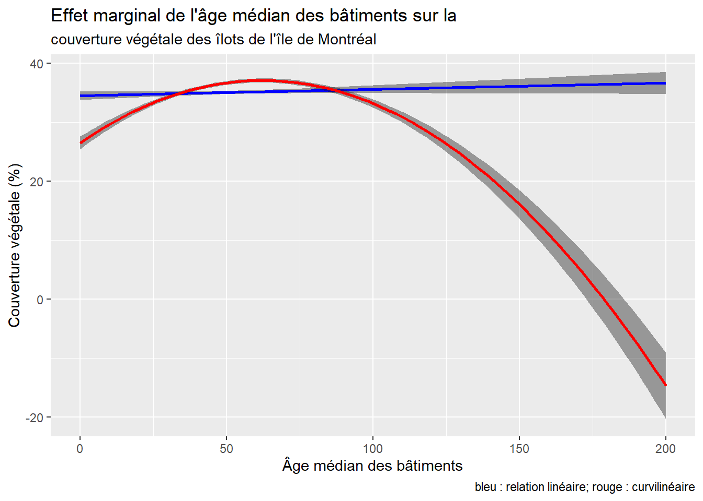
La figure 7.2 démontre bien que la relation linéaire n’est pas significative : la pente est extrêmement faible, ce qui signale que l’effet de l’âge médian est presque nul (B = 0,0108, p = 0,0902). En revanche, la relation curvilinéaire est plus intéressante : la couverture végétale croît quand l’âge médian des bâtiments dans l’îlot augmente de 0 à 60 ans environ, puis elle décroît.
7.5.1.2 Variable indépendante sous forme logarithmique
Une autre manière d’explorer une relation non linéaire est d’intégrer la variable sous forme logarithmique (Hanck et al. 2019, 212‑218). L’interprétation du coefficient de régression est alors plus complexe : 1 % d’augmentation de la variable \(X_k\) entraîne un changement de \(\mbox{0,01} \times \beta_k\) de la variable dépendante. Autrement dit, il n’est plus exprimé dans les unités de mesure originales des deux variables.
Au tableau 7.4, le coefficient de -6,855 pour la variable logHABHA s’interprète alors comme suit : un changement de 1 % de la variable densité de population entraîne une diminution de \(\mbox{0,01} \times -\mbox{6,855 =} -\mbox{0,07}\) de la couverture végétale dans l’île, toutes choses étant égales par ailleurs.
| Variable | Coef. | Erreur type | Valeur de T | P | coef. 2,5 % | coef. 97,5 % | |
|---|---|---|---|---|---|---|---|
| Constante | 52,831 | 1,001 | 52,780 | 0,000 | 50,868 | 54,793 | *** |
| logHABHA | -6,855 | 0,168 | -40,730 | 0,000 | -7,185 | -6,525 | *** |
| AgeMedian ordre 1 | 11,985 | 15,586 | 0,770 | 0,442 | -18,568 | 42,537 | |
| AgeMedian ordre 2 | -286,144 | 13,942 | -20,520 | 0,000 | -313,473 | -258,816 | *** |
| Pct_014 | 0,941 | 0,031 | 30,090 | 0,000 | 0,879 | 1,002 | *** |
| Pct_65P | 0,306 | 0,019 | 16,550 | 0,000 | 0,270 | 0,343 | *** |
| Pct_MV | -0,036 | 0,010 | -3,650 | 0,000 | -0,056 | -0,017 | *** |
| Pct_FR | -0,344 | 0,011 | -31,210 | 0,000 | -0,366 | -0,323 | *** |
Puisque l’interprétation du coefficient de régression de \(log(\beta_k)\) est plus complexe, il convient de s’assurer que son apport au modèle est justifié, et ce, de deux façons :
Comparez les mesures d’ajustement des deux modèles (surtout les R2 ajustés). Si le R2 ajusté du modèle avec \(log(\beta_k)\) est plus élevé que celui avec \(\beta_k\), alors la transformation logarithmique fait de votre variable indépendante un meilleur prédicteur, toutes choses étant égales par ailleurs.
Construisez les graphiques des effets marginaux de votre variable afin de vérifier si la relation qu’elle partage avec votre VD est plutôt logarithmique que linéaire (figure 7.3). Notez que cette approche graphique peut aussi ne donner aucune indication lorsque vos données sont très dispersées ou que la relation est faible entre votre variable dépendante et indépendante.
library(ggpubr)
library(ggplot2)
library(ggeffects)
# Modèles
modele1a <- lm(VegPct ~ HABHA+poly(AgeMedian,2)+
Pct_014+Pct_65P+Pct_MV+Pct_FR, data = DataFinal)
modele1b <- lm(VegPct ~ log(HABHA)+poly(AgeMedian,2)+
Pct_014+Pct_65P+Pct_MV+Pct_FR, data = DataFinal)
# Valeurs prédites
fit1a <- ggpredict(modele1a, terms = "HABHA")
fit1b <- ggpredict(modele1b, terms = "HABHA")
# Graphiques
G1a <- ggplot(fit1a, aes(x, predicted)) +
geom_point(data = DataFinal, mapping = aes(x = HABHA, y = VegPct),
size = 0.2, color = rgb(0.1,0.1,0.1,0.4)) +
geom_ribbon(aes(ymin = conf.low, ymax = conf.high), alpha = .3, fill = "red")+
geom_line(color = "red") +
labs(title = "Variable non transformée",
y = "VD: valeur prédite",
x = "Habitants km2") +
ylim(0,100) + xlim(0,600)
G1b <- ggplot(fit1b, aes(x, predicted)) +
geom_point(data = DataFinal, mapping = aes(x = HABHA, y = VegPct),
size = 0.2, color = rgb(0.1,0.1,0.1,0.4)) +
geom_ribbon(aes(ymin = conf.low, ymax = conf.high), alpha = .3, fill = "red")+
geom_line(color = "red") +
labs(title = "Variable transformée (log)",
y = "VD: valeur prédite",
x = "Habitants km2")
G1aG1b <- ggarrange(G1a, G1b, nrow = 1)
G1aG1b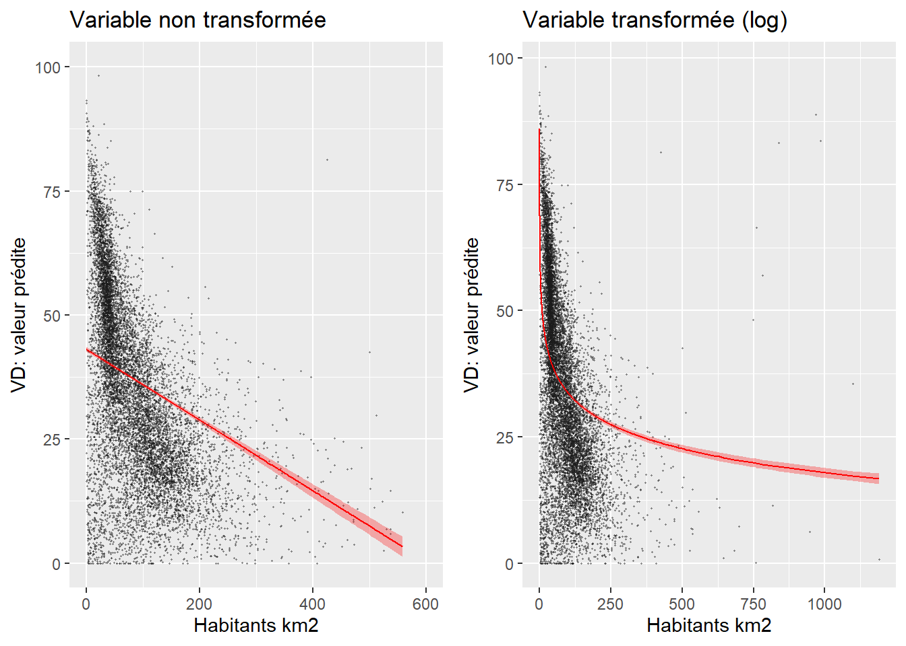
7.5.2 Variable indépendante qualitative dichotomique
Il est très fréquent d’introduire une variable qualitative dichotomique comme variable explicative ou de contrôle dans un modèle. À titre de rappel, une variable dichotomique comprend deux modalités (section 2.1.2).
Dans le modèle ci-dessous, nous voulons vérifier si un îlot situé sur le territoire de la ville de Montréal a proportionnellement moins de végétation qu’un îlot situé dans une autre municipalité de l’île de Montréal, toutes choses étant égales par ailleurs. Pour ce faire, nous créons une variable binaire dénommée VilleMtl qui prend la valeur de 1 pour les îlots de la ville de Montréal et 0 pour ceux d’une autre municipalité.
Nous obtenons ainsi un coefficient de régression pour VilleMtl de -7,699 (tableau 7.5). Cela signifie que si toutes les autres variables indépendantes du modèle étaient constantes, alors un îlot de la ville de Montréal aurait en moyenne une valeur de -7,7 % de moins de végétation comparativement à un îlot situé dans une autre municipalité.
| Variable | Coef. | Erreur type | Valeur de T | P | coef. 2,5 % | coef. 97,5 % | |
|---|---|---|---|---|---|---|---|
| Constante | 57,676 | 1,009 | 57,140 | 0,000 | 55,697 | 59,654 | *** |
| VilleMtl | -7,699 | 0,377 | -20,430 | 0,000 | -8,438 | -6,960 | *** |
| log(HABHA) | -6,174 | 0,168 | -36,680 | 0,000 | -6,504 | -5,844 | *** |
| AgeMedian ordre 1 | -14,871 | 15,334 | -0,970 | 0,332 | -44,929 | 15,186 | |
| AgeMedian ordre 2 | -280,251 | 13,668 | -20,500 | 0,000 | -307,044 | -253,459 | *** |
| Pct_014 | 0,794 | 0,031 | 25,230 | 0,000 | 0,732 | 0,856 | *** |
| Pct_65P | 0,270 | 0,018 | 14,810 | 0,000 | 0,234 | 0,306 | *** |
| Pct_MV | -0,028 | 0,010 | -2,890 | 0,004 | -0,047 | -0,009 | ** |
| Pct_FR | -0,294 | 0,011 | -26,550 | 0,000 | -0,316 | -0,273 | *** |
Bien interpréter un coefficient d’une variable dichotomique
Nous avons vu que le coefficient de régression (\(\beta_k\)) indique le changement de la variable dépendante (Y), lorsque la variable indépendante augmente d’une unité, toutes choses étant égales par ailleurs.
Pour une variable dichotomique, le coefficient indique le changement de Y quand les observations appartiennent à la modalité qui a la valeur de 1 (ici la ville de Montréal), comparativement à celle qui a la valeur de 0 (autres municipalités de l’île de Montréal), toutes choses étant égales par ailleurs.
La modalité qui a la valeur de 0 est alors appelée modalité ou catégorie de référence.
Autrement dit, si la variable avait été codée : 0 pour la ville de Montréal et 1 pour les autres municipalités, alors le coefficient aurait été de 7,699.
Pour éviter d’oublier quelle est la modalité de référence (valeur de 0), nous verrons plus tard (dans la section mise en œuvre des modèles de régression dans R (section 7.7) qu’il peut être préférable de définir un facteur avec la fonction as.factor et d’indiquer la catégorie de référence avec la fonction relevel(x, ref).
Comme pour une variable indépendante introduite avec une fonction polynomiale, il peut être très intéressant d’illustrer l’effet marginal de la variable dichotomique avec un graphique qui montre l’écart entre les moyennes des deux modalités, une fois contrôlées les autres variables indépendantes (figure 7.4). Notez que dans ce graphique, les barres d’erreurs situées au sommet des rectangles représentent les intervalles à 95 % des prédictions du modèle.
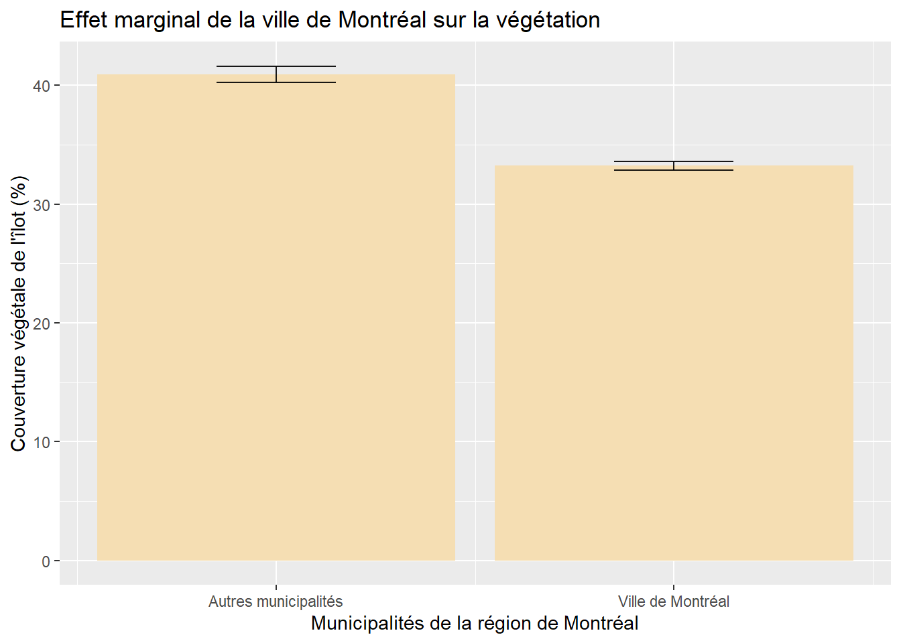
7.5.3 Variable indépendante qualitative polytomique
Il est possible d’introduire une variable qualitative polytomique comme variable explicative ou de contrôle dans un modèle. À titre de rappel, une variable polytomique comprend plus de deux modalités, qu’elle soit nominale ou ordinale (section 2.1.2).
En guise d’exemple, une variable qualitative pourrait être : différents groupes de population (groupes d’âge, minorités visibles, catégories socioprofessionnelles, etc.), différents territoires ou régions (ville centrale, première couronne, deuxième couronne, etc.), une variable continue transformée en quatre ou cinq catégories ordinales selon les quartiles ou les quintiles.
7.5.3.1 Comment construire un modèle de régression avec une variable explicative qualitative polytomique?
Prenons l’exemple d’un modèle de régression comprenant deux variables indépendantes : l’une continue (X1), l’autre qualitative (X2) avec quatre modalités (A, B, C et D). L’introduction de la variable qualitative dans le modèle revient à :
Transformer chaque modalité en variable muette (binaire). Nous avons ainsi quatre nouvelles variables binaires :
X2A,X2B,X2CetX2D. Par exemple, pourX2A, les observations de la modalité A se verront affecter la valeur de 1 versus 0 pour les autres observations. La même démarche s’applique àX2B,X2CetX2D(voir tableau 7.6).Toutes les modalités transformées en variables muettes sont introduites dans le modèle comme variables indépendantes sauf celle servant de catégorie de référence. Pourquoi sauf une? Si nous mettions toutes les modalités en variable muette, alors chaque observation serait repérée par une valeur de 1, « il y aurait alors une parfaite multicolinéarité et aucune solution unique pour les coefficients de régression ne pourrait être trouvée » (Bressoux 2010, 128).
Par exemple, si nous choisissons la modalité A comme catégorie de référence, l’équation de régression s’écrit alors :
\[ Y = b_{0} + b_{1}X_{1} + b_{2B}X_{2B} + b_{2C}X_{2C} + b_{2D}X_{2D}+ e \tag{7.25}\]
- Vous aurez compris que choisir la modalité D comme catégorie de référence revient à écrire l’équation suivante :
\[ Y = b_{0} + b_{1}X_{1} + b_{2A}X_{2A} + b_{2B}X_{2B} + b_{2C}X_{2C} + e \tag{7.26}\]
| obs | Y | X1 | X2 | X2A | X2B | X2C | X2D |
|---|---|---|---|---|---|---|---|
| 1 | 48,55 | 17,37 | A | 1 | 0 | 0 | 0 |
| 2 | 39,26 | 9,55 | A | 1 | 0 | 0 | 0 |
| 3 | 43,29 | 15,42 | A | 1 | 0 | 0 | 0 |
| 4 | 43,57 | 35,52 | B | 0 | 1 | 0 | 0 |
| 5 | 58,61 | 18,73 | B | 0 | 1 | 0 | 0 |
| 6 | 64,71 | 20,92 | B | 0 | 1 | 0 | 0 |
| 7 | 50,22 | 18,10 | C | 0 | 0 | 1 | 0 |
| 8 | 40,74 | 15,88 | C | 0 | 0 | 1 | 0 |
| 9 | 54,65 | 20,12 | D | 0 | 0 | 0 | 1 |
| 10 | 26,95 | 25,60 | D | 0 | 0 | 0 | 1 |
7.5.3.2 Comment interpréter les coefficients des modalités d’une variable explicative qualitative polytomique
Les coefficients des différentes modalités s’interprètent en fonction de la catégorie de référence. Dans l’exemple ci-dessous, nous avons inclus la ville de Montréal comme catégorie de référence (tableau 7.7). Toutes choses étant égales par ailleurs, nous pouvons alors constater que :
en moyenne, les îlots résidentiels de Senneville et de Baie-D’Urfé ont respectivement 23,235 % et 21,400 % plus de végétation que ceux de la ville de Montréal.
la seule municipalité comprenant en moyenne moins de végétation dans ses îlots résidentiels est Montréal-Est (-13,334 %).
nous remarquons aussi que les îlots des municipalités de Sainte-Anne-de-Bellevue, de Montréal-Ouest et de Côte-Saint-Luc ne présentent pas significativement moins ou plus de végétation que ceux de la ville de Montréal (leurs valeurs de p sont supérieures à 0,05).
Par conséquent, les valeurs de t et de p pour une modalité permettent de vérifier si elle est ou non significativement différente de la catégorie de référence.
| Variable | Coef. | Erreur type | Valeur de T | P | |
|---|---|---|---|---|---|
| Constante | 48,193 | 0,992 | 48,580 | 0,000 | *** |
| log(HABHA) | -5,836 | 0,168 | -34,840 | 0,000 | *** |
| AgeMedian ordre 1 | -11,807 | 15,648 | -0,750 | 0,451 | |
| AgeMedian ordre 2 | -266,469 | 13,613 | -19,570 | 0,000 | *** |
| Pct_014 | 0,794 | 0,032 | 25,190 | 0,000 | *** |
| Pct_65P | 0,277 | 0,018 | 15,130 | 0,000 | *** |
| Pct_MV | -0,036 | 0,010 | -3,740 | 0,000 | *** |
| Pct_FR | -0,279 | 0,011 | -25,340 | 0,000 | *** |
| Municipalité | |||||
| ref : Montréal | – | – | – | – | – |
| Baie-D’Urfé | 21,400 | 1,635 | 13,090 | 0,000 | *** |
| Beaconsfield | 14,112 | 0,893 | 15,810 | 0,000 | *** |
| Côte-Saint-Luc | 0,172 | 1,035 | 0,170 | 0,868 | |
| Dollard-Des Ormeaux | 7,960 | 0,748 | 10,640 | 0,000 | *** |
| Dorval | 11,157 | 0,971 | 11,490 | 0,000 | *** |
| Hampstead | 3,080 | 1,599 | 1,930 | 0,054 | . |
| Kirkland | 6,937 | 1,014 | 6,840 | 0,000 | *** |
| Mont-Royal | 12,699 | 0,894 | 14,210 | 0,000 | *** |
| Montréal-Est | -13,334 | 1,920 | -6,940 | 0,000 | *** |
| Montréal-Ouest | 3,306 | 1,819 | 1,820 | 0,069 | . |
| Pointe-Claire | 9,896 | 0,866 | 11,430 | 0,000 | *** |
| Sainte-Anne-de-Bellevue | 0,342 | 1,904 | 0,180 | 0,858 | |
| Senneville | 23,235 | 3,793 | 6,130 | 0,000 | *** |
| Westmount | 2,255 | 1,088 | 2,070 | 0,038 | * |
Utilisons maintenant comme référence la municipalité qui avait le coefficient le plus fort dans le modèle précédent, soit Senneville (tableau 7.8). Bien entendu, les coefficients des variables continues et de la constante ne changent pas. Par contre, les coefficients de toutes les municipalités sont négatifs puisque la municipalité de Senneville est celle qui a proportionnellement le plus de végétation dans ses îlots, toutes choses étant égales par ailleurs.
| Variable | Coef. | Erreur type | Valeur de T | P | |
|---|---|---|---|---|---|
| Constante | 71,429 | 3,846 | 18,570 | 0,000 | *** |
| log(HABHA) | -5,836 | 0,168 | -34,840 | 0,000 | *** |
| AgeMedian ordre 1 | -11,807 | 15,648 | -0,750 | 0,451 | |
| AgeMedian ordre 2 | -266,469 | 13,613 | -19,570 | 0,000 | *** |
| Pct_014 | 0,794 | 0,032 | 25,190 | 0,000 | *** |
| Pct_65P | 0,277 | 0,018 | 15,130 | 0,000 | *** |
| Pct_MV | -0,036 | 0,010 | -3,740 | 0,000 | *** |
| Pct_FR | -0,279 | 0,011 | -25,340 | 0,000 | *** |
| Municipalité | |||||
| ref : Senneville | – | – | – | – | – |
| Baie-D’Urfé | -1,835 | 4,093 | -0,450 | 0,654 | |
| Beaconsfield | -9,123 | 3,866 | -2,360 | 0,018 | * |
| Côte-Saint-Luc | -23,064 | 3,918 | -5,890 | 0,000 | *** |
| Dollard-Des Ormeaux | -15,275 | 3,852 | -3,970 | 0,000 | *** |
| Dorval | -12,078 | 3,891 | -3,100 | 0,002 | ** |
| Hampstead | -20,156 | 4,094 | -4,920 | 0,000 | *** |
| Kirkland | -16,298 | 3,911 | -4,170 | 0,000 | *** |
| Mont-Royal | -10,537 | 3,875 | -2,720 | 0,007 | ** |
| Montréal | -23,235 | 3,793 | -6,130 | 0,000 | *** |
| Montréal-Est | -36,570 | 4,231 | -8,640 | 0,000 | *** |
| Montréal-Ouest | -19,930 | 4,187 | -4,760 | 0,000 | *** |
| Pointe-Claire | -13,339 | 3,865 | -3,450 | 0,001 | *** |
| Sainte-Anne-de-Bellevue | -22,893 | 4,225 | -5,420 | 0,000 | *** |
| Westmount | -20,980 | 3,927 | -5,340 | 0,000 | *** |
À l’inverse, si nous utilisons Montréal-Est comme modalité de référence, soit la municipalité avec le coefficient le plus faible dans le premier modèle, tous les coefficients deviendront positifs (tableau 7.9).
| Variable | Coef. | Erreur type | Valeur de T | P | |
|---|---|---|---|---|---|
| Constante | 34,859 | 2,109 | 16,530 | 0,000 | *** |
| log(HABHA) | -5,836 | 0,168 | -34,840 | 0,000 | *** |
| AgeMedian ordre 1 | -11,807 | 15,648 | -0,750 | 0,451 | |
| AgeMedian ordre 2 | -266,469 | 13,613 | -19,570 | 0,000 | *** |
| Pct_014 | 0,794 | 0,032 | 25,190 | 0,000 | *** |
| Pct_65P | 0,277 | 0,018 | 15,130 | 0,000 | *** |
| Pct_MV | -0,036 | 0,010 | -3,740 | 0,000 | *** |
| Pct_FR | -0,279 | 0,011 | -25,340 | 0,000 | *** |
| Municipalité | |||||
| ref : Montréal-Est | – | – | – | – | – |
| Baie-D’Urfé | 34,735 | 2,495 | 13,920 | 0,000 | *** |
| Beaconsfield | 27,446 | 2,091 | 13,130 | 0,000 | *** |
| Côte-Saint-Luc | 13,506 | 2,167 | 6,230 | 0,000 | *** |
| Dollard-Des Ormeaux | 21,294 | 2,053 | 10,370 | 0,000 | *** |
| Dorval | 24,491 | 2,134 | 11,480 | 0,000 | *** |
| Hampstead | 16,414 | 2,478 | 6,620 | 0,000 | *** |
| Kirkland | 20,272 | 2,159 | 9,390 | 0,000 | *** |
| Mont-Royal | 26,033 | 2,101 | 12,390 | 0,000 | *** |
| Montréal | 13,334 | 1,920 | 6,940 | 0,000 | *** |
| Montréal-Ouest | 16,640 | 2,628 | 6,330 | 0,000 | *** |
| Pointe-Claire | 23,230 | 2,087 | 11,130 | 0,000 | *** |
| Sainte-Anne-de-Bellevue | 13,676 | 2,687 | 5,090 | 0,000 | *** |
| Senneville | 36,570 | 4,231 | 8,640 | 0,000 | *** |
| Westmount | 15,590 | 2,196 | 7,100 | 0,000 | *** |
Comment choisir la catégorie de référence?
Plusieurs options sont possibles. Vous pouvez retenir :
la modalité comprenant le plus d’observations;
la modalité avec la plus forte valeur pour la variable dépendante;
la modalité avec la plus faible valeur pour la variable dépendante;
la modalité qui fait le plus de sens avec votre cadre théorique. Prenons l’exemple d’une variable qualitative comprenant plusieurs groupes d’âge (15-29 ans, 30-39 ans, 40-49 ans, 50-54 ans, 65 ans et plus). Si votre étude porte sur les jeunes et que vous souhaitez comparer leur situation comparativement aux autres groupes d’âge, toutes choses étant égales par ailleurs, sélectionnez bien évidemment la modalité des 15 à 29 ans comme catégorie de référence.
Mais surtout, évitez de choisir une catégorie comprenant très peu d’observations.
7.5.3.3 Effet marginal d’une variable explicative qualitative polytomique
Comme pour une variable dichotomique, il est possible d’illustrer l’effet marginal de la variable qualitative dichotomique avec un graphique. Quelle que soit la catégorie de référence choisie, le graphique est le même. La figure 7.5 illustre ainsi la valeur moyenne, avec son intervalle de confiance à 95 %, de la végétation dans les îlots résidentiels de chacune des municipalités de la région de Montréal, ceteris paribus.
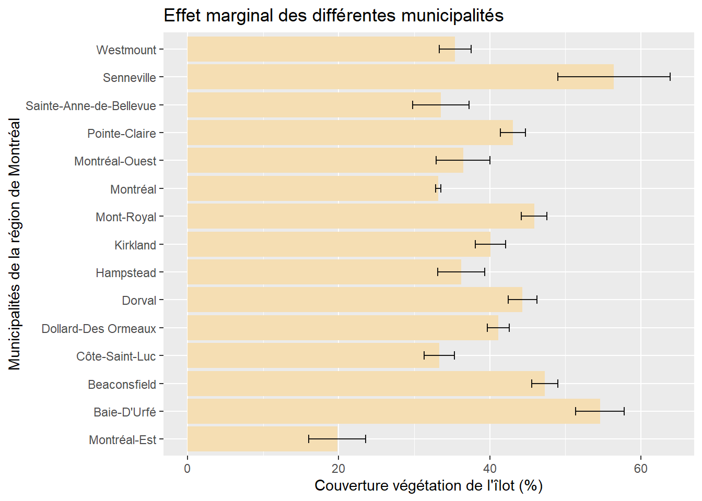
7.5.4 Variables d’interaction
7.5.4.1 Variable d’interaction entre deux variables continues
Une interaction entre deux variables indépendantes continues consiste à simplement les multiplier (\(X_1 \times X_2\)). Le modèle s’écrit alors :
\[ Y = \beta_{0} + \beta_{1}X_{1} + \beta_{2}X_{2} + \beta_{3}(X_{1}\times X_{2}) +\ldots+ \beta_{k}X_{k} + e \tag{7.27}\]
Un nouveau coefficient (\(\beta_{3}\)) s’ajoute pour l’interaction (la multiplication) entre les deux variables continues. Pourquoi ajouter une interaction entre deux variables? L’objectif est d’évaluer l’effet d’une augmentation de \(\beta_{1}\) en fonction d’un niveau donné de \(\beta_{2}\) et inversement. Cela permet ainsi de répondre à la question suivante : l’effet de la variable \(\beta_{1}\) est-il influencé par la variable \(\beta_{2}\) et inversement?
Prenons un exemple concret pour illustrer le tout. Premièrement, nous ajoutons DistCBDkm comme VI, soit la distance au centre-ville exprimée en kilomètres. Notez que pour ne pas surspécifier le modèle, les variables dichotomique VilleMtl ou polytomique Municipalité ont été préalablement ôtées. Le coefficient (B = 0,659, p < 0,001) signale que plus nous nous éloignons du centre-ville, plus la couverture végétale des îlots augmente significativement. En guise d’exemple, toutes choses étant égales par ailleurs, un îlot situé à dix kilomètres du centre-ville aura en moyenne 6,59 % plus de végétation (tableau 7.10).
| Variable | Coef. | Erreur type | Valeur de T | P | |
|---|---|---|---|---|---|
| Constante | 41,061 | 1,085 | 37,830 | 0,000 | *** |
| log(HABHA) | -5,555 | 0,172 | -32,300 | 0,000 | *** |
| AgeMedian ordre 1 | 176,921 | 16,582 | 10,670 | 0,000 | *** |
| AgeMedian ordre 2 | -298,735 | 13,560 | -22,030 | 0,000 | *** |
| Pct_014 | 0,763 | 0,031 | 24,440 | 0,000 | *** |
| Pct_65P | 0,321 | 0,018 | 17,860 | 0,000 | *** |
| Pct_MV | -0,018 | 0,010 | -1,880 | 0,060 | . |
| Pct_FR | -0,288 | 0,011 | -26,260 | 0,000 | *** |
| DistCBDkm | 0,659 | 0,027 | 24,460 | 0,000 | *** |
Dans ce modèle (tableau 7.10), les pourcentages d’enfants de moins de 15 ans et de 65 ans et plus (Pct_014 et Pct_65P) sont associés positivement à la variable dépendante tandis que le pourcentage de personnes à faible revenu (Pct_FR) est associé négativement.
Que se passe-t-il si nous introduisons une variable d’interaction entre DistCBDkm et Pct_FR (tableau 7.11)? L’effet du pourcentage de personnes à faible revenu (%) est significatif et négatif lorsqu’il est mis en interaction avec la distance au centre-ville. Cela indique que plus l’îlot est éloigné du centre-ville, plus Pct_FR a un effet négatif sur la couverture végétale (B = −0,011, p < 0,001).
| Variable | Coef. | Erreur type | Valeur de T | P | |
|---|---|---|---|---|---|
| Constante | 38,382 | 1,137 | 33,760 | 0,000 | *** |
| log(HABHA) | -5,505 | 0,172 | -32,080 | 0,000 | *** |
| AgeMedian ordre 1 | 160,523 | 16,672 | 9,630 | 0,000 | *** |
| AgeMedian ordre 2 | -310,666 | 13,610 | -22,830 | 0,000 | *** |
| Pct_014 | 0,786 | 0,031 | 25,130 | 0,000 | *** |
| Pct_65P | 0,345 | 0,018 | 18,960 | 0,000 | *** |
| Pct_MV | -0,018 | 0,010 | -1,820 | 0,069 | . |
| Pct_FR | -0,191 | 0,017 | -11,500 | 0,000 | *** |
| DistCBDkm | 0,821 | 0,034 | 24,060 | 0,000 | *** |
| DistCBDkmX_Pct_FR | -0,011 | 0,001 | -7,700 | 0,000 | *** |
À nouveau, il est possible de représenter l’effet de cette interaction à l’aide d’un graphique des effets marginaux. Notez cependant que nous devons représenter l’effet simultané de deux variables indépendantes sur notre variable dépendante, ce qu’il est possible de faire avec une carte de chaleur. La figure 7.6 représente donc l’effet moyen de l’interaction sur la prédiction dans le premier panneau, ainsi que l’intervalle de confiance à 95 % de la prédiction dans les deuxième et troisième panneaux.
Nous constatons ainsi que le modèle prédit des valeurs de végétation les plus faibles lorsque le pourcentage de personnes à faible revenu est élevé et que la distance au centre-ville est élevée (en haut à droite à la figure 7.6). En revanche, les valeurs les plus élevées de végétation sont atteintes lorsque la distance au centre-ville est élevée et que le pourcentage de personnes à faible revenu est faible (en bas à droite). Il semble donc que l’éloignement au centre-ville soit associé avec une augmentation de la densité végétale, mais que cette augmentation puisse être mitigée par l’augmentation parallèle du pourcentage de personnes à faible revenu.
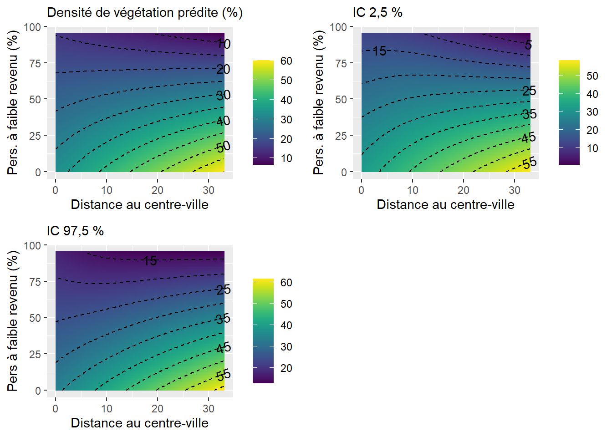
Notez que dans la figure 7.6, la relation entre les deux variables indépendantes et la variable dépendante apparaît non linéaire du fait de l’interaction. À titre de comparaison, si nous utilisons les prédictions du modèle 5 (sans interaction), nous obtenons les prédictions présentées à la figure 7.7. Vous pouvez constater sur cette figure sans interaction que les deux effets des variables indépendantes sont linéaires puisque toutes les lignes sont parallèles.
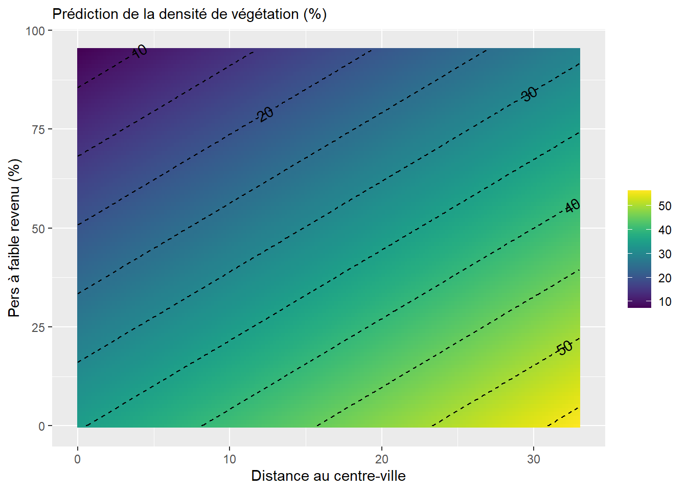
7.5.4.2 Variable d’interaction entre une variable continue et une variable dichotomique
Une interaction entre une VI continue et une VI dichotomique consiste aussi à les multiplier (\(X_1 \times D_2\)); le modèle s’écrit alors :
\[ Y = \beta_{0} + \beta_{1}X_{1} + \beta_{2}D_{2} + \beta_{3}(X_{1}\times D_{2}) +\ldots+ \beta_{k}X_{k} + e \tag{7.28}\]
Pour interpréter le coefficient \(B_3\), il convient alors de bien connaître le nom de la modalité ayant la valeur de 1 (0 étant la modalité de référence). Dans le modèle présenté au tableau 7.12, nous avons multiplié la variable dichotomique ville de Montréal (VilleMtl) avec le pourcentage de personnes à faible revenu (Pct_FR). Les résultats de ce modèle démontrent que, toutes choses étant égales par ailleurs :
À chaque augmentation d’une unité du pourcentage à faible revenu (
Pct_FR), le pourcentage de la couverture végétale diminue significativement de −0,444.Comparativement à un îlot situé dans une autre municipalité de l’île de Montréal, un îlot de la ville de Montréal a en moyenne −9,804 de couverture végétale.
À chaque augmentation d’une unité de
Pct_FRpour un îlot de la Ville Montréal, la couverture végétale augmente de 0,166 comparativement à une autre municipalité de l’île. En d’autres termes, lePct_FRsur le territoire de la ville de Montréal est associé à une diminution de la couverture végétale moins forte que les autres municipalités, comme illustré à la figure 7.8) (pentes en rouge et en bleu).
| Variable | Coef. | Erreur type | Valeur de T | P | |
|---|---|---|---|---|---|
| Constante | 59,275 | 1,053 | 56,300 | 0,000 | *** |
| log(HABHA) | -6,160 | 0,168 | -36,640 | 0,000 | *** |
| AgeMedian ordre 1 | -20,719 | 15,354 | -1,350 | 0,177 | |
| AgeMedian ordre 2 | -278,141 | 13,656 | -20,370 | 0,000 | *** |
| Pct_014 | 0,789 | 0,031 | 25,100 | 0,000 | *** |
| Pct_65P | 0,278 | 0,018 | 15,200 | 0,000 | *** |
| Pct_MV | -0,030 | 0,010 | -3,030 | 0,002 | ** |
| Pct_FR | -0,444 | 0,030 | -14,550 | 0,000 | *** |
| VilleMtl | -9,804 | 0,549 | -17,850 | 0,000 | *** |
| VilleMtlX_Pct_FR | 0,166 | 0,032 | 5,260 | 0,000 | *** |
L’interaction entre une variable qualitative et une variable quantitative peut être représentée par un graphique des effets marginaux. La pente (coefficient) de la variable quantitative varie en fonction des deux catégories de la variable qualitative dichotomique (figure 7.8).

7.5.4.3 Variable d’interaction entre deux variables dichotomiques
Variable d’interaction entre deux variables dichotomiques
Nous avons vu qu’il est possible d’introduire une variable d’interaction entre deux variables continues ou entre une variable continue et une autre dichotomique. Sachez qu’il est aussi possible d’introduire une interaction entre deux variables dichotomiques. Sur le sujet, vous pouvez consulter la section 8.3 de l’excellent ouvrage de Hanck et al. (2019).
7.6 Diagnostics de la régression
Pour illustrer comment vérifier si le modèle respecte ou non les hypothèses de la régression, nous utilisons le modèle suivant :
modele3 <- lm(VegPct ~ log(HABHA)+poly(AgeMedian,2)+Pct_014+Pct_65P+Pct_MV+Pct_FR, data = DataFinal)
7.6.1 Nombre d’observations
Tous les auteurs ne s’entendent pas sur le nombre d’observations minimal que devrait comprendre une régression linéaire multiple, tant s’en faut! Parallèlement, d’autres auteurs proposent aussi des méthodes de simulation pour estimer les coefficients de régression sur un jeu de données comprenant peu d’observations. Bien qu’aucune règle ne soit bien établie, la question du nombre d’observations mérite d’être posée puisqu’un modèle basé sur trop peu d’observations risque de produire des coefficients de régression peu fiables. Par faible fiabilité des coefficients, nous entendons que la suppression d’une ou de plusieurs observations pourrait drastiquement changer l’effet et/ou la significativité d’une ou de plusieurs variables explicatives.
Dans un ouvrage classique intitulé Using Multivariate Statistics, Barbara Tabachnick et Linda Fidell (2007, 123‑124) proposent deux règles de pouce (à la louche) :
\(n \geq 50 + 8k\) avec \(n\) et \(k\) étant respectivement les nombres d’observations et de variables indépendantes, pour tester le coefficient de corrélation multiple (R2).
\(n \geq 104 + k\) pour tester individuellement chaque variable indépendante.
Dans le modèle, nous avons 10 210 observations et variables indépendantes. Les deux conditions sont donc largement respectées.
7.6.2 Normalité des résidus
Pour vérifier si les résidus sont normalement distribués, trois démarches largement décrites dans la section 2.5.4 peuvent être utilisées :
- le calcul des coefficients d’asymétrie et d’aplatissement;
- les tests de normalité, particulièrement celui de Jarque-Bera basé sur un test multiplicateur de Lagrange;
- les graphiques (histogramme avec courbe normale et diagramme quantile-quantile) (figure 7.9).
Les deux premières démarches étant parfois très restrictives, nous accordons habituellement une attention particulière aux graphiques.
Pour notre modèle, les coefficients d’asymétrie (−0,263) et d’aplatissement (1,149) signalent que la distribution est plutôt symétrique, mais leptokurtique, c’est-à-dire que les valeurs des résidus sont bien réparties autour de 0, mais avec une faible dispersion. Puisque la valeur de p associée au test de Jarque-Bera est inférieure à 0,05, nous pouvons en conclure que la distribution des résidus est anormale. La forme pointue de la distribution est d’ailleurs confirmée à la lecture de l’histogramme avec la courbe normale et du diagramme quantile-quantile.
Skewness Kurtosis
-0.161 1.193
Robust Jarque Bera Test
data: residus
X-squared = 513.15, df = 2, p-value < 2.2e-16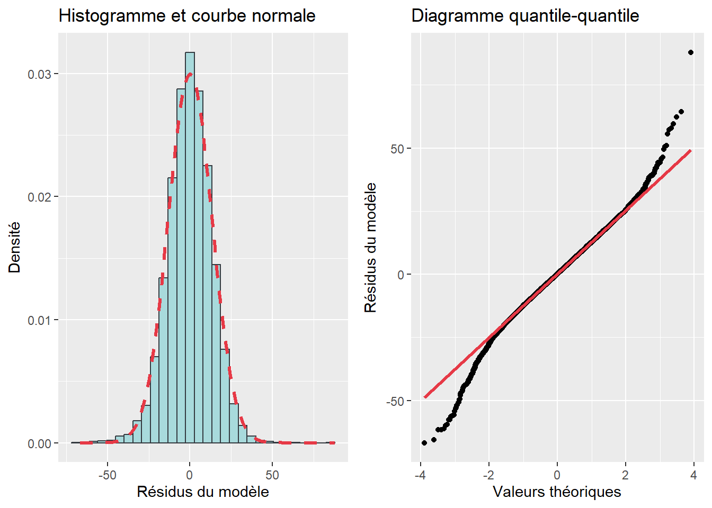
7.6.3 Linéarité et homoscédasticité des résidus
Un modèle est efficace si la dispersion des résidus est homogène sur tout le spectre des valeurs prédites de la variable dépendante. Dans le cas d’une absence d’homoscédasticité – appelée problème d’hétéroscédasticité –, le nuage de points construit à partir des résidus et des valeurs prédites (figure 7.10) prend la forme d’une trompette ou d’un entonnoir : les résidus sont alors faibles quand les valeurs prédites sont faibles et sont de plus en plus élevés au fur et à mesure que les valeurs prédites augmentent.
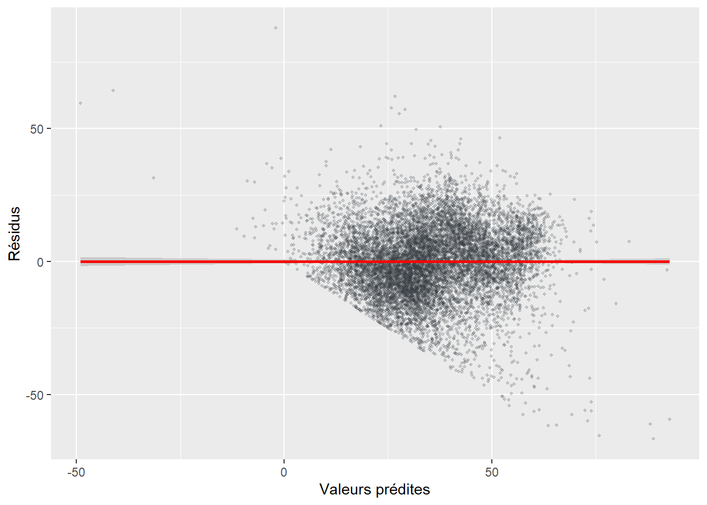
Le test de Breusch-Pagan est souvent utilisé pour vérifier l’homoscédasticité des résidus. Il est construit avec les hypothèses suivantes :
H0 : homoscédasticité, c’est-à-dire que les termes d’erreur ont une variance constante à travers les valeurs prédites.
H1 : hétéroscédasticité.
Si la valeur de p associée à ce test est inférieure à 0,05, nous réfutons l’hypothèse nulle et nous concluons qu’il y a un problème d’hétéroscédasticité, ce qui est le cas pour notre modèle.
studentized Breusch-Pagan test
data: modele3
BP = 1722, df = 8, p-value < 2.2e-167.6.4 Absence de multicolinéarité excessive
Un modèle présente un problème de multicolinéarité excessive lorsque deux variables indépendantes ou plus sont très fortement corrélées entre elles. Rappelez-vous qu’un coefficient de régression estime l’effet d’une variable dépendante (\(X_k\)) si toutes les autres VI restent constantes (c’est-à-dire une fois les autres VI contrôlées, toutes choses étant égales par ailleurs…).
Prenons deux variables indépendantes (\(X_1\) et \(X_2\)) fortement corrélées avec un coefficient de Pearson très élevé (0,90 par exemple). Admettons que chacune des deux VI a un effet important et significatif sur votre VD lorsqu’une seule est introduite dans le modèle. Si les deux variables sont introduites dans le même modèle, vous évaluez donc l’effet de \(X_1\) une fois contrôlé \(X_2\) et l’effet de \(X_2\) une fois contrôlé \(X_1\). Par conséquent, l’effet de l’une des deux devient très faible, voire probablement non significatif.
7.6.4.1 Comment évaluer la multicolinéarité?
Pour ce faire, nous utilisons habituellement le facteur d’inflation de la variance (Variance Inflation Factor – VIF en anglais). Le calcul de ce facteur pour chaque VI est basé sur trois étapes.
- Pour chaque VI, nous construisons un modèle de régression multiple où elle est expliquée par toutes les autres variables indépendantes du modèle. Par exemple, pour la première VI (\(X_1\)), l’équation du modèle s’écrit :
\[ X_1 = b_0 + b_2X_2 +\ldots+ b_kX_k + e \tag{7.29}\]
- À partir de cette équation, nous obtenons ainsi un \(R^2\) qui nous indique la proportion de la variance de \(X_1\) expliquée par les autres VI. Par convention, nous calculons la tolérance (équation 7.30) qui indique la proportion de la variance de \(X_k\) n’étant pas expliquée par les autres VI. En guise d’exemple, une valeur de tolérance égale à 0,1 signale que 90 % de la variance de \(X_k\) est expliqué par les autres variables, ce qui est un problème de multicolinéarité en soit. Concrètement, plus la valeur de la tolérance est proche de zéro, plus c’est problématique.
\[ \mbox{Tolérance}_k=1-R_k^2=\frac{1}{VIF_k} \tag{7.30}\]
- Puis, nous calculons le facteur d’inflation de la variance (équation 7.31). Là encore, des règles de pouce (à la louche) sont utilisées. Certains considéreront une valeur de VIF supérieur à 10 (soit une tolérance à 0,1 ou inférieure) comme problématique, d’autres retiendront le seuil de 5 plus conservateur (soit une tolérance à 0,2 ou inférieure).
\[ VIF_k = \frac{1}{1-R_k^2} \tag{7.31}\]
Pour notre modèle, toutes les valeurs de VIF sont inférieures à 2, indiquant, sans l’ombre d’un doute, l’absence de multicolinéarité excessive.
GVIF Df GVIF^(1/(2*Df))
VilleMtl 1.319 1 1.149
log(HABHA) 1.342 1 1.159
poly(AgeMedian, 2) 1.399 2 1.087
Pct_014 1.601 1 1.265
Pct_65P 1.317 1 1.147
Pct_MV 1.483 1 1.218
Pct_FR 1.818 1 1.3487.6.4.2 Comment régler un problème de multicolinéarité?
La prudence est de mise! Si une ou plusieurs variables présentent une valeur de VIF supérieure à 5, construisez une matrice de corrélation de Pearson (section 4.3.7) et repérez les valeurs de corrélation supérieures à 0,8 ou inférieures à −0,8. Vous repérerez ainsi les corrélations problématiques entre deux variables indépendantes du modèle.
Refaites ensuite un modèle en ôtant la variable indépendante avec la plus forte valeur de VIF (7 ou 12 par exemple), et revérifiez les valeurs de VIF. Refaites cette étape si le problème de multicolinéarité excessive persiste.
Une multicolinéarité excessive n’est pas forcément inquiétante
Nous avons vu plus haut comment introduire des variables indépendantes particulières comme des variables d’interaction (\(X_1 \times X_2\)) ou des variables sous une forme polynomiale (ordre 2 : \(X_1 + X_1^2\); ordre 3 : \(X_1 + X_1^2 + X_1^3\), etc.). Bien entendu, ces termes composant les variables d’interaction ou d’une forme polynomiale sont habituellement fortement corrélés entre eux. Cela n’est toutefois pas problématique!
Dans l’exemple ci-dessous, nous obtenons deux valeurs de VIF très élevées pour la variable d’interaction Pct_014:DistCBDkm (16,713) et l’un des paramètres à partir duquel elle est calculée, soit DistCBDkm (12,526).
GVIF Df GVIF^(1/(2*Df))
log(HABHA) 1.426 1 1.194
poly(AgeMedian, 2) 1.768 2 1.153
Pct_014 3.326 1 1.824
Pct_65P 1.359 1 1.166
Pct_MV 1.495 1 1.223
Pct_FR 1.810 1 1.345
DistCBDkm 12.526 1 3.539
Pct_014:DistCBDkm 16.713 1 4.0887.6.5 Absence d’observations aberrantes
7.6.5.1 Détection des observations très influentes du modèle
Lors de l’analyse des corrélations (section 4.3), nous avons vu que des valeurs extrêmes peuvent avoir un impact important sur le coefficient de corrélation de Pearson. Le même principe s’applique à la régression multiple, pour laquelle nous nous s’attendrions à ce que chaque observation joue un rôle équivalent dans la détermination de l’équation du modèle.
Autrement dit, il est possible que certaines observations avec des valeurs extrêmes – fortement dissemblables des autres – aient une influence importante, voire démesurée, dans l’estimation du modèle. Concrètement, cela signifie que si elles étaient ôtées, les coefficients de régression et la qualité d’ajustement du modèle pourraient changer drastiquement. Deux mesures sont habituellement utilisées pour évaluer l’influence de chaque observation sur le modèle :
- La statistique de la distance de Cook qui mesure l’influence de chaque observation sur les résultats du modèle. Brièvement, la distance de Cook évalue l’influence de l’observation i en la supprimant du modèle (équation 7.32). Plus sa valeur est élevée, plus l’observation joue un rôle important dans la détermination de l’équation de régression.
\[ D_i = \frac{\sum_{j=1}^n(\widehat{y}_i-\widehat{y}_{i(j)})^2}{ks^2} \tag{7.32}\]
avec \(\widehat{y}_{i(j)}\) la valeur prédite quand l’observation i est ôté du modèle, k le nombre de variables indépendantes et \(s^2\) l’erreur quadratique moyenne du modèle.
- La statistique de l’effet levier (leverage value en anglais) qui varie de 0 (aucune influence) à 1 (explique tout le modèle). La somme de toutes les valeurs de cette statistique est égale au nombre de VI dans le modèle.
Quel critère retenir pour détecter les observations avec potentiellement une trop grande influence sur le modèle?
Pour les repérer, voire les supprimer, plusieurs auteur(e)s proposent les seuils suivants : \(4/n\) ou \(8/n\) ou \(16/n\). Avec 10210 observations dans le modèle, les seuils seraient les suivants :
Nombre d'observations = 10210 (100 %)
4/n = 0.00039
8/n = 0.00078
16/n = 0.00157
Observations avec une valeur supérieure ou égale aux différents seuils
4/n = 605 soit 5.93 %
8/n = 275 soit 2.69 %
16/n = 133 soit 1.3 %Le critère de \(4/n\) étant plutôt sévère, nous privilégions généralement celui de \(8/n\), voire \(16/n\). Il est aussi possible de construire un nuage de points pour les repérer (figure 7.11).
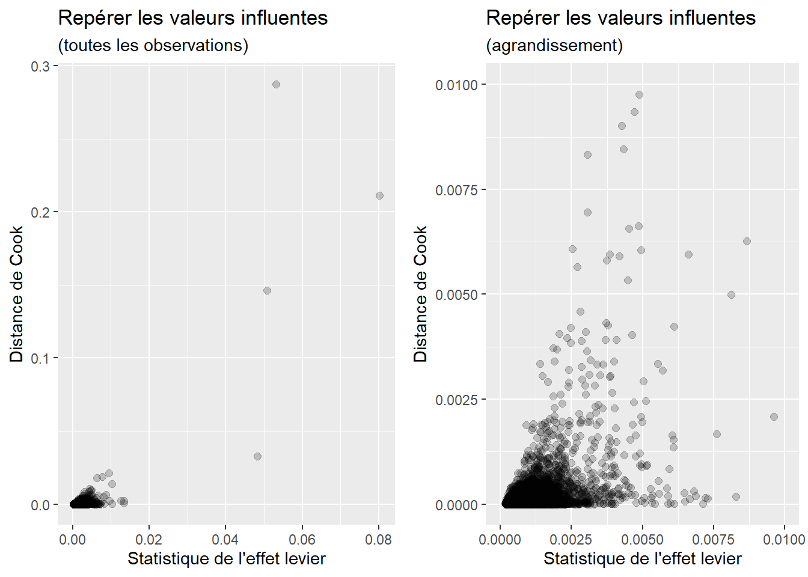
7.6.5.2 Quoi faire avec les observations très influentes du modèle
Trois approches sont possibles :
Recourir à des régressions boostrap, ce qui permet généralement de supprimer l’effet de ces observations. Brièvement, le principe général est de créer un nombre élevé d’échantillons du jeu de données initial (1000 à 2000 itérations par exemple) et de construire un modèle de régression pour chacun d’eux. On obtiendra ainsi des intervalles de confiance pour les coefficients de régression et les mesures d’ajustement du modèle.
Supprimer les observations trop influentes (avec l’un des critères de \(4/n\), \(8/n\) et \(16/n\) vus plus haut). Une fois supprimées, il convient 1) de recalculer le modèle, 2) de refaire le diagnostic de la régression au complet et finalement, 3) de comparer les modèles avant et après suppression des valeurs trop influentes, notamment la qualité d’ajustement du modèle (R2 ajusté) et les coefficients de régression. Des changements importants indiqueront que le premier modèle est potentiellement biaisé.
Utiliser un modèle linéaire généralisé (GLM) permettant d’utiliser une distribution différente correspondant plus à votre jeu de données (chapitre 8).
7.7 Mise en œuvre dans R
7.7.1 Fonctions lm, summary() et confint()
Les fonctions de base lm, summary() et confint() permettent respectivement 1) de construire un modèle, 2) d’afficher ces résultats et 3) d’obtenir les intervalles de confiance des coefficients de régression :
monModele <- lm(Y ~X1+X2+..+Xk)avec Y étant la variable dépendante et les variables indépendantes (X1 à Xk) étant séparées par le signe +.summary(monModele)confint(monModele, level=.95).
Dans la syntaxe ci-dessous, vous retrouverez les différents modèles abordés dans les sections précédentes; remarquez que toutes que les lignes summary sont mises en commentaires afin de ne pas afficher les résultats des modèles.
# Chargement des données
load("data/lm/DataVegetation.RData")
# 1er modèle de régression
modele1 <- lm(VegPct ~ HABHA+AgeMedian+Pct_014+Pct_65P+Pct_MV+Pct_FR,
data = DataFinal)
# summary(Modele1)
# 2e modèle de régression : fonction polynomiale d'ordre 2 (poly(AgeMedian,2))
modele2 <- lm(VegPct ~ HABHA+poly(AgeMedian,2)+Pct_014+Pct_65P+Pct_MV+Pct_FR,
data = DataFinal)
# summary(Modele2)
# 3e modèle de régression : forme logarithmique (log(HABHA))
modele3 <- lm(VegPct ~ log(HABHA)+poly(AgeMedian,2)+Pct_014+Pct_65P+Pct_MV+Pct_FR,
data = DataFinal)
# summary(Modele3)
# 4e modèle de régression : VI dichotomique
# création de la variable dichotomique (VilleMtl)
DataFinal$VilleMtl <- ifelse(DataFinal$SDRNOM == "Montréal", 1, 0)
modele4 <- lm(VegPct ~ log(HABHA)+poly(AgeMedian,2)+Pct_014+Pct_65P+Pct_MV+Pct_FR+
VilleMtl, # variable dichotomique
data = DataFinal)
# summary(Modele4)
# 5e modèle de régression : VI polytomique
# création de la variable polytomique (Munic)
DataFinal$Munic <- relevel(DataFinal$SDRNOM, ref = "Montréal")
modele5 <- lm(VegPct ~ log(HABHA)+poly(AgeMedian,2)+Pct_014+Pct_65P+Pct_MV+Pct_FR+
Munic, data = DataFinal)
# summary(Modele5)
# 6e modèle de régression : interaction entre deux VI continues,
# soit DistCBDkm*Pct_014
modele6 <- lm(VegPct ~ log(HABHA)+poly(AgeMedian,2)+Pct_014+Pct_65P+Pct_MV+Pct_FR+
DistCBDkm+DistCBDkm*Pct_014,
data = DataFinal)
# summary(Modele6)
# 7e modèle de régression : interaction entre une VI continue et une VI dichotomique,
# soit VilleMtl*Pct_FR
modele8 <- lm(VegPct ~ log(HABHA)+poly(AgeMedian,2)+Pct_014+Pct_65P+Pct_MV+Pct_FR+
VilleMtl*Pct_FR,
data = DataFinal)
# summary(Modele7)À la figure 7.12, les résultats de la régression linéaire multiple, obtenus avec la summary(monModele), sont présentés en quatre sections distinctes :
Le rappel de l’équation du modèle.
Quelques statistiques descriptives sur les résidus du modèle, soit la différence entre les valeurs observées et prédites.
Un tableau pour les coefficients de régression comprenant plusieurs colonnes, à savoir les coefficients de régression (
Estimate), l’erreur type du coefficient (Std. Error), la valeur de t (t value) et la probabilité associée à la valeur de t (Pr(>|t|)). La première ligne de ce tableau (Estimate) est pour la constante (Intercept en anglais) et celles qui suivent sont pour les variables indépendantes.Les mesures d’ajustement du modèle, dont le RMSE (
Residual standard error), les R2 classique (Multiple R-squared) et ajusté (Adjusted R-squared), la statistique F avec le nombre de degrés de liberté en lignes (nombre d’observations) et en colonnes (n-k-1) ainsi que la valeur de p qui est lui associée (F-statistic: 1223 on 6 and 10203 DF, p-value: < 2.2e-16).
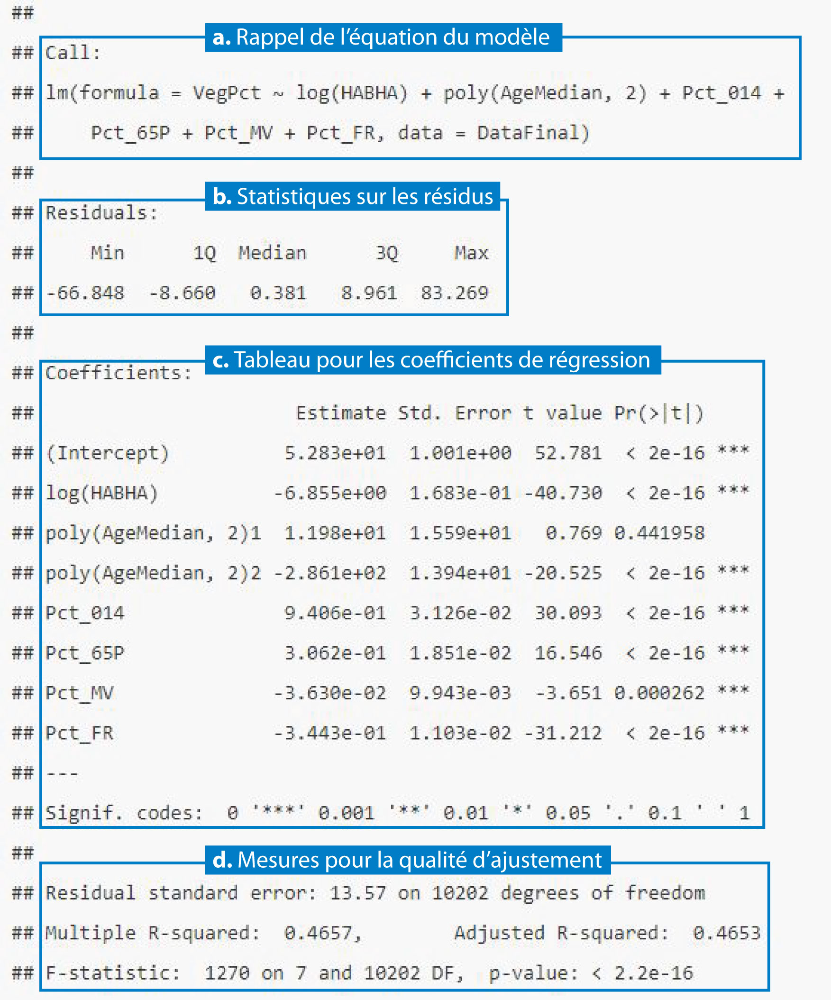
summary(Modèle)# Intervalle de confiance des coefficients à 95 %
confint(modele3) 2.5 % 97.5 %
(Intercept) 50.8684505 54.79255157
log(HABHA) -7.1847527 -6.52495353
poly(AgeMedian, 2)1 -18.5676034 42.53686203
poly(AgeMedian, 2)2 -313.4726002 -258.81630119
Pct_014 0.8793672 1.00190861
Pct_65P 0.2699504 0.34250907
Pct_MV -0.0557951 -0.01681481
Pct_FR -0.3659445 -0.322695627.7.2 Comparaison des modèles
Tel que détaillé à la section 7.3.2, pour comparer des modèles imbriqués, il convient d’analyser les valeurs du R2 ajusté et du F incrémentiel, ce qui peut être fait en trois étapes.
Première étape. Il peut être judicieux d’afficher l’équation des différents modèles afin de se remémorer les VI introduites dans chacun d’eux, et ce, avec la fonction MonModèle$call$formula.
# Rappel des équations des huit modèles
print(modele1$call$formula)VegPct ~ HABHA + AgeMedian + Pct_014 + Pct_65P + Pct_MV + Pct_FRprint(modele2$call$formula)VegPct ~ HABHA + poly(AgeMedian, 2) + Pct_014 + Pct_65P + Pct_MV +
Pct_FRprint(modele3$call$formula)VegPct ~ log(HABHA) + poly(AgeMedian, 2) + Pct_014 + Pct_65P +
Pct_MV + Pct_FRprint(modele4$call$formula)VegPct ~ log(HABHA) + poly(AgeMedian, 2) + Pct_014 + Pct_65P +
Pct_MV + Pct_FR + VilleMtlprint(modele5$call$formula)VegPct ~ log(HABHA) + poly(AgeMedian, 2) + Pct_014 + Pct_65P +
Pct_MV + Pct_FR + Municprint(modele6$call$formula)VegPct ~ log(HABHA) + poly(AgeMedian, 2) + Pct_014 + Pct_65P +
Pct_MV + Pct_FR + DistCBDkm + DistCBDkm * Pct_014print(modele7$call$formula)VegPct ~ log(HABHA) + poly(AgeMedian, 2) + Pct_014 + Pct_65P +
Pct_MV + Pct_FR + VilleMtl + VilleMtlX_Pct_FRDeuxième étape. La syntaxe ci-dessous vous permet de comparer les R2 ajustés des différents modèles. Nous constatons ainsi que :
La valeur du R2 ajusté du modèle 2 est supérieure à celle du modèle 1 (0,4378 versus 0,4179), signalant que la forme polynomiale d’ordre 2 pour l’âge médian des bâtiments (
poly(AgeMedian, 2)) améliore la prédiction comparativement à la forme originelle de (AgeMedian).La valeur du R2 ajusté du modèle 3 est supérieure à celle du modèle 2 (0,4653 versus 0,4378), signalant que la forme logarithmique pour la densité de population (
log(HABHA)) améliore la prédiction comparativement à la forme originelle (HABHA).La valeur du R2 ajusté du modèle 4 est supérieure à celle du modèle 3 (0,4863 versus 0,4653), signalant que l’introduction de la variable dichotomique (
VilleMtl) pour la municipalité apporte un gain de variance expliquée non négligeable.La valeur du R2 ajusté du modèle 5 est supérieure à celle du modèle 4 (0,5064 versus 0,4863), signalant que l’introduction de la variable polytomique pour les municipalités de l’île de Montréal (
Muni) améliore la prédiction du modèle comparativement à la variable dichotomique (VilleMtl).La valeur du R2 ajusté du modèle 6 est supérieure à celle du modèle 2 (0,4953 versus 0,4378), signalant que l’introduction d’une variable d’interaction entre deux variables continues (
DistCBDkm + DistCBDkm * Pct_014) apporte également un gain substantiel comparativement au modèle 2, ne comprenant pas cette variable d’interaction.La valeur du R2 ajusté du modèle 7 est supérieure à celle du modèle 2 (0,4877 versus 0,4378), signalant que l’introduction d’une variable d’interaction entre une variable continue et la variable dichotomique (
DistCBDkm + DistCBDkm * Pct_014) apporte également un gain substantiel comparativement au modèle 2, ne comprenant pas cette variable d’interaction.
cat("\nComparaison des R2 ajustés :",
"\nModèle 1.", round(summary(modele1)$adj.r.squared,4),
"\nModèle 2.", round(summary(modele2)$adj.r.squared,4),
"\nModèle 3.", round(summary(modele3)$adj.r.squared,4),
"\nModèle 4.", round(summary(modele4)$adj.r.squared,4),
"\nModèle 5.", round(summary(modele5)$adj.r.squared,4),
"\nModèle 6.", round(summary(modele6)$adj.r.squared,4),
"\nModèle 7.", round(summary(modele7)$adj.r.squared,4)
)
Comparaison des R2 ajustés :
Modèle 1. 0.4179
Modèle 2. 0.4378
Modèle 3. 0.4653
Modèle 4. 0.4863
Modèle 5. 0.5064
Modèle 6. 0.4953
Modèle 7. 0.4877Troisième étape. La syntaxe ci-dessous permet d’obtenir le F incrémentiel pour des modèles ne comprenant pas le même nombre de variables dépendantes, et ce, en utilisant la fonction anova(modele1, modele2, ..., modelen).
Par exemple, la syntaxe anova(modele1, modele2) permet de comparer les deux modèles et signale que le gain de variance expliquée entre les deux modèles (R2 de 0,4179 et de 0,4378) est significatif (F incrémentiel = 362,64; p < 0,001).
# Comparaison des deux modèles uniquement (modèles 1 et 2)
anova(modele1, modele2)Analysis of Variance Table
Model 1: VegPct ~ HABHA + AgeMedian + Pct_014 + Pct_65P + Pct_MV + Pct_FR
Model 2: VegPct ~ HABHA + poly(AgeMedian, 2) + Pct_014 + Pct_65P + Pct_MV +
Pct_FR
Res.Df RSS Df Sum of Sq F Pr(>F)
1 10203 2046427
2 10202 1976182 1 70245 362.64 < 2.2e-16 ***
---
Signif. codes: 0 '***' 0.001 '**' 0.01 '*' 0.05 '.' 0.1 ' ' 1Il est aussi possible de comparer plusieurs modèles simultanément. Notez que dans la syntaxe ci-dessous, le troisième modèle n’est pas inclus, car il comprend le même nombre de variables indépendantes que le second modèle; il en va de même pour le sixième modèle comparativement au cinquième. Ici aussi, l’analyse des valeurs de F et de p vous permettent de vérifier si les modèles, et donc leurs R2 ajustés, sont significativement différents (quand p < 0,05).
# Comparaison de plusieurs modèles
anova(modele1, modele2, modele4, modele5, modele7)Analysis of Variance Table
Model 1: VegPct ~ HABHA + AgeMedian + Pct_014 + Pct_65P + Pct_MV + Pct_FR
Model 2: VegPct ~ HABHA + poly(AgeMedian, 2) + Pct_014 + Pct_65P + Pct_MV +
Pct_FR
Model 3: VegPct ~ log(HABHA) + poly(AgeMedian, 2) + Pct_014 + Pct_65P +
Pct_MV + Pct_FR + VilleMtl
Model 4: VegPct ~ log(HABHA) + poly(AgeMedian, 2) + Pct_014 + Pct_65P +
Pct_MV + Pct_FR + Munic
Model 5: VegPct ~ log(HABHA) + poly(AgeMedian, 2) + Pct_014 + Pct_65P +
Pct_MV + Pct_FR + VilleMtl + VilleMtlX_Pct_FR
Res.Df RSS Df Sum of Sq F Pr(>F)
1 10203 2046427
2 10202 1976182 1 70245 412.995 < 2.2e-16 ***
3 10201 1805547 1 170636 1003.224 < 2.2e-16 ***
4 10188 1732849 13 72698 32.878 < 2.2e-16 ***
5 10200 1800664 -12 -67815 33.226 < 2.2e-16 ***
---
Signif. codes: 0 '***' 0.001 '**' 0.01 '*' 0.05 '.' 0.1 ' ' 1Quel modèle choisir?
Nous avons déjà évoqué le principe de parcimonie. À titre de rappel, l’ajout de variables indépendantes qui s’avèrent significatives fait inévitablement augmenter la variance expliquée et ainsi la valeur R2 ajusté. Par contre, elle peut rendre le modèle plus complexe à analyser, voire entraîner un surajustement du modèle. Nous avons vu que l’introduction des variables ditchtomique, polytomique et d’interaction avait pour effet d’augmenter la capacité de prédiction du modèle. Quoi qu’il en soit, le gain de variance expliquée s’élève à environ 4 % entre le troisième modèle versus le cinquième et le sixième :
- Modèle 3 (R2=0,465).
VegPct ~ log(HABHA) + poly(AgeMedian, 2) + Pct_014 + Pct_65P + Pct_MV + Pct_FR - Modèle 5 (R2=0,506).
VegPct ~ log(HABHA) + poly(AgeMedian, 2) + Pct_014 + Pct_65P + Muni - Modèle 6 (R2=0,495).
VegPct ~ log(HABHA) + poly(AgeMedian, 2) + Pct_014 + Pct_65P + Pct_MV + Pct_FR + DistCBDkm + DistCBDkm * Pct_014
Par conséquent, il est légitime de se questionner sur le bien-fondé de conserver ces variables indépendantes additionnelles : Muni pour le modèle 5 et DistCBDkm + DistCBDkm * Pct_014 pour le modèle 6. Trois options sont alors envisageables :
Bien entendu, conservez l’une ou l’autre de ces variables additionnelles si elles sont initialement reliées à votre cadre théorique.
Conservez l’une ou l’autre de ces variables additionnelles si elles permettent de répondre à une question spécifique (non prévue initialement) et si les associations ainsi révélées méritent, selon vous, discussion.
Supprimez-les si leur apport est limité et ne fait que complexifier le modèle.
7.7.3 Diagnostic sur un modèle
7.7.3.1 Vérification le nombre d’observations
La syntaxe suivante permet de vérifier si le nombre d’observations est suffisant pour tester le R2 et chacune des variables indépendantes.
modele3 <- lm(VegPct ~ log(HABHA)+poly(AgeMedian,2)+
Pct_014+Pct_65P+Pct_MV+Pct_FR, data = DataFinal)
# Nombre d'observation
nobs <- length(modele3$fitted.values)
# Nombre de variables indépendantes (coefficients moins la constante)
k <- length(modele3$coefficients)-1
# Première règle de pouce
if(nobs >= 50+(8*k)){
cat("\nNombre d'observations suffisant pour tester le R2")
}else{
cat("\nAttention! Nombre d'observations insuffisant pour tester le R2")
}
Nombre d'observations suffisant pour tester le R2# Deuxième règle de pouce
if(nobs >= 104+k){
cat("\nNombre d'observations suffisant pour tester individuellement chaque VI")
}else{
cat("\nAttention! Nombre d'observations insuffisant",
"\npour tester individuellement chaque VI")
}
Nombre d'observations suffisant pour tester individuellement chaque VI7.7.3.2 Vérification la normalité des résidus
La syntaxe suivante permet de vérifier la normalité des résidus selon les trois démarches classiques : 1) coefficients d’asymétrie et d’aplatissement, 2) test de normalité de Jarque-Bera (fonction JarqueBeraTest du package DescTools) et 3) les graphiques (histogramme avec courbe normale et diagramme quantile-quantile).
library(DescTools)
library(stats)
library(ggplot2)
library(ggpubr)
# Vecteur pour les résidus du modèle
residus <- modele3$residuals
# 1. coefficients d’asymétrie et d’aplatissement
c(Skewness= round(DescTools::Skew(residus),3),
Kurtosis = round(DescTools::Kurt(residus),3))Skewness Kurtosis
-0.263 1.149 # 2. Test de normalité de Jarque-Bera
JarqueBeraTest(residus)
Robust Jarque Bera Test
data: residus
X-squared = 528.51, df = 2, p-value < 2.2e-16# 3. Graphiques
Ghisto <- ggplot() +
geom_histogram(aes(x = residus, y = ..density..),
bins = 30, color = "#343a40", fill = "#a8dadc") +
stat_function(fun = dnorm,
args = list(mean = mean(residus),
sd = sd(residus)),
color = "#e63946", size = 1.2, linetype = "dashed")+
labs(title = "Histogramme et courbe normale",
y = "densité", "Résidus du modèle")
Gqqplot <- qplot(sample = residus)+
geom_qq_line(line.p = c(0.25, 0.75),
color = "#e63946", size = 1.2)+
labs(title = "Diagramme quantile-quantile",
x = "Valeurs théoriques",
y = "Résidus")
ggarrange(Ghisto, Gqqplot, ncol = 2, nrow = 1)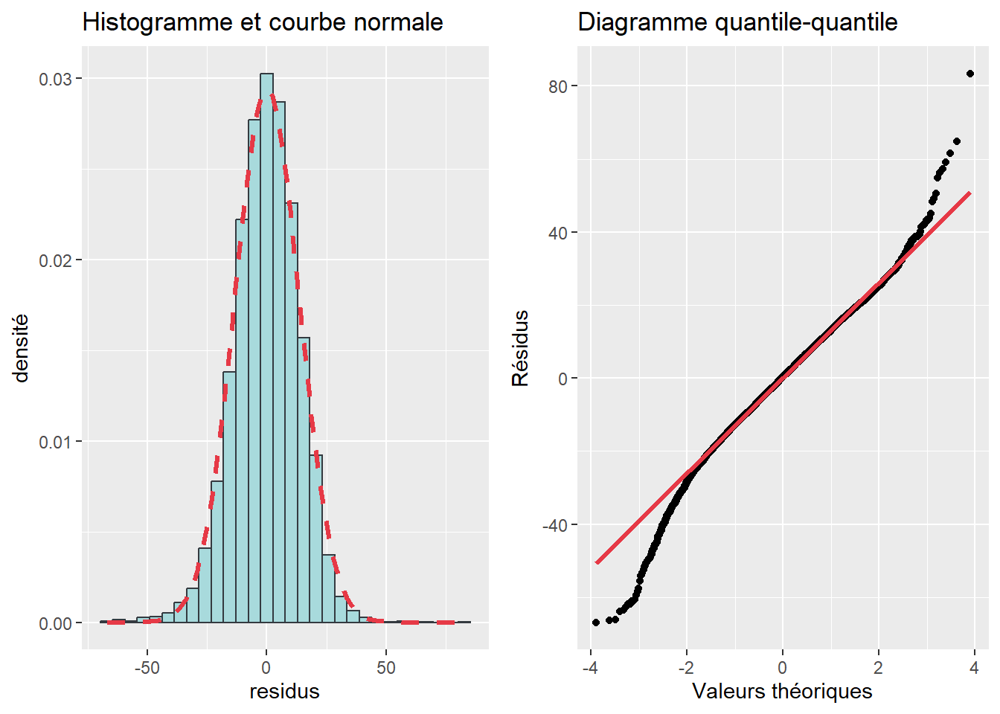
7.7.3.3 Évaluation de la linéarité et l’homoscédasticité des résidus
La syntaxe suivante permet de vérifier si l’hypothèse d’homoscédasticité des résidus est respectée avec : 1) un nuage de points entre les valeurs prédites et des résidus, 3) les graphiques (histogramme avec courbe normale et diagramme quantile-quantile) et 2) le test de Breusch-Pagan (fonction bptest du package lmtest).
studentized Breusch-Pagan test
data: modele3
BP = 1651.5, df = 7, p-value < 2.2e-16if(bptest(modele3)$p.value < 0.05){
cat("\nAttention : problème d'hétéroscédasticité des résidus")
}else{
cat("\nParfait : homoscédasticité des résidus")
}
Attention : problème d'hétéroscédasticité des résidus# 2. Graphique entre les valeurs prédites et les résidus
residus <- modele3$residuals
ypredits <- modele3$fitted.values
ggplot() +
geom_point(aes(x = ypredits, y = residus),
color = "#343a40", fill = "#a8dadc",
alpha = 0.2, size = 0.8) +
geom_smooth(aes(x = ypredits, y = residus),
method = lm, color = "red")+
labs(x = "Valeurs prédites", y = "Résidus")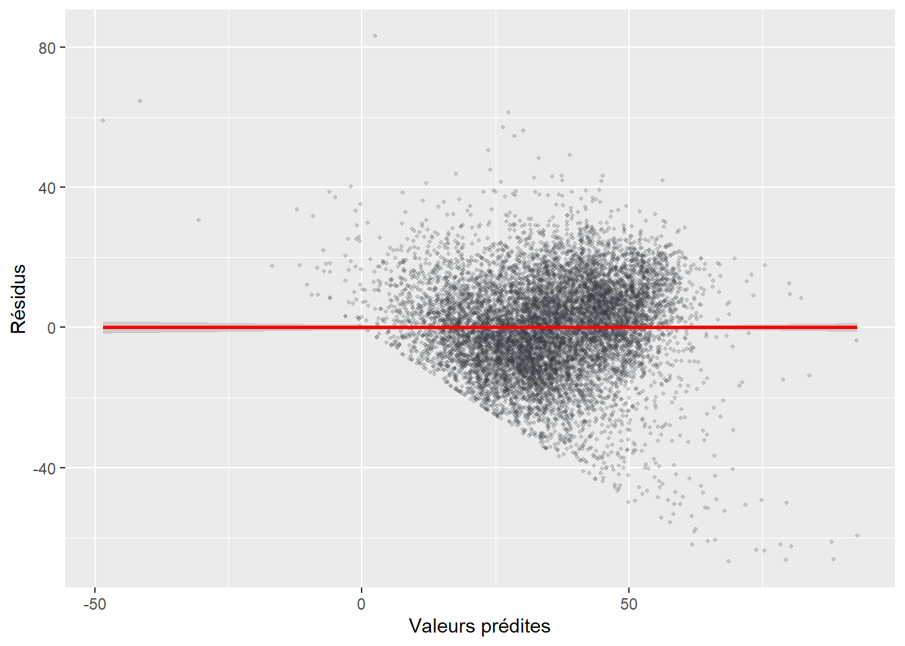
7.7.3.4 Vérification la multicolinéarité excessive
Pour vérifier la présence ou l’absence de multicolinéarité excessive, nous utilisons habituellement la fonction vif du package car.
GVIF Df GVIF^(1/(2*Df))
log(HABHA) 1.289 1 1.136
poly(AgeMedian, 2) 1.387 2 1.085
Pct_014 1.518 1 1.232
Pct_65P 1.304 1 1.142
Pct_MV 1.480 1 1.217
Pct_FR 1.730 1 1.315# problème de multicolinéarité (VIF > 10)?
car::vif(modele3) > 10 GVIF Df GVIF^(1/(2*Df))
log(HABHA) FALSE FALSE FALSE
poly(AgeMedian, 2) FALSE FALSE FALSE
Pct_014 FALSE FALSE FALSE
Pct_65P FALSE FALSE FALSE
Pct_MV FALSE FALSE FALSE
Pct_FR FALSE FALSE FALSE# problème de multicolinéarité (VIF > 5)?
car::vif(modele3) > 5 GVIF Df GVIF^(1/(2*Df))
log(HABHA) FALSE FALSE FALSE
poly(AgeMedian, 2) FALSE FALSE FALSE
Pct_014 FALSE FALSE FALSE
Pct_65P FALSE FALSE FALSE
Pct_MV FALSE FALSE FALSE
Pct_FR FALSE FALSE FALSE7.7.3.5 Répérage des valeurs très influentes du modèle
La syntaxe suivante permet d’évaluer le nombre de valeurs très influentes dans le modèle avec les critères de \(\mbox{4/n}\), \(\mbox{8/n}\) et \(\mbox{16/n}\) pour la distance de Cook.
nobs <- length(modele3$fitted.values)
DistanceCook <- cooks.distance(modele3)
n4 <- length(DistanceCook[DistanceCook > 4/nobs])
n8 <- length(DistanceCook[DistanceCook > 8/nobs])
n16 <- length(DistanceCook[DistanceCook > 16/nobs])
cat("Nombre d'observations =", nobs, "(100 %)",
"\n 4/n =", round(4/nobs,5),
"\n 8/n =", round(8/nobs,5),
"\n 16/n =", round(16/nobs,5),
"\nObservations avec une valeur supérieure ou égale aux différents seuils",
"\n 4/n =", n4, "soit", round(n4/nobs*100,2)," %",
"\n 8/n =", n8, "soit", round(n8/nobs*100,2)," %",
"\n 16/n =", n16, "soit", round(n16/nobs*100,2), " %"
)Nombre d'observations = 10210 (100 %)
4/n = 0.00039
8/n = 0.00078
16/n = 0.00157
Observations avec une valeur supérieure ou égale aux différents seuils
4/n = 604 soit 5.92 %
8/n = 285 soit 2.79 %
16/n = 132 soit 1.29 %Vous pouvez également construire un nuage de points avec la distance de Cook et l’effet de levier (leverage value) pour repérer visuellement les observations très influentes (figure 7.15).
library(car)
library(ggpubr)
DistanceCook <- cooks.distance(modele3)
LeverageValue <- hatvalues(modele3)
G1 <- ggplot()+
geom_point(aes(x = LeverageValue, y = DistanceCook),
alpha = 0.2, size = 2, col = "black", fill = "red")+
labs(x = "Effet levier",
y = "Distance de Cook",
title = "Repérer les valeurs influentes",
subtitle = "(toutes les observations)")
G2 <- ggplot()+
geom_point(aes(x = LeverageValue, y = DistanceCook),
alpha = 0.2, size = 2, col = "black", fill = "red")+
ylim(0,0.01)+
xlim(0,0.01)+
labs(x = "Effet levier",
y = "Distance de Cook",
title = "Repérer les valeurs influentes",
subtitle = "(agrandissement)")
ggarrange(G1, G2, nrow = 1, ncol = 2)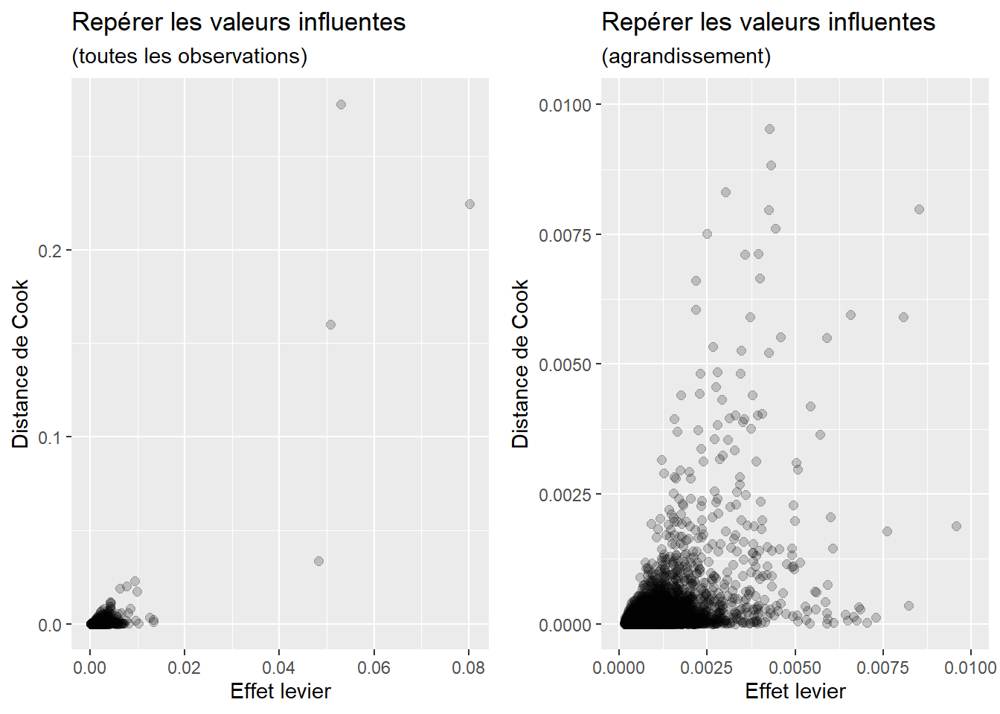
7.7.3.6 Construction d’un nouveau modèle en supprimant les observations très influentes du modèle
Dans un premier temps, il convient de construire un nouveau modèle sans les valeurs influentes du modèle de départ.
# Nombre d'observation dans le modèle 3
nobs <-length(modele3$fitted.values)
# Distance de Cook
cook <- cooks.distance(modele3)
# Les observations très influentes avec le critère de 16/n
DataSansOutliers <- cbind(DataFinal, cook)
DataSansOutliers <- DataSansOutliers[DataSansOutliers$cook < 8/nobs, ]
modele3b <- lm(VegPct ~ log(HABHA)+poly(AgeMedian,2)+Pct_014+Pct_65P+Pct_MV+Pct_FR,
data = DataSansOutliers)
nobsb <-length(modele3b$fitted.values)Comparez les valeurs du R2 ajusté des deux modèles. Habituellement, la suppression des valeurs très influentes s’accompagne d’une augmentation du R2 ajusté. C’est notamment le cas ici puisque sa valeur grimpe de 0,4653 à 0,5684, signalant ainsi un gain important pour la variance expliquée.
cat("\nComparaison des R2 ajustés :",
"\nModèle de départ (n=", nobs, "), ",
round(summary(modele3)$adj.r.squared,4),
"\nModèle sans les observations très influentes (n=", nobsb, "), ",
round(summary(modele3b)$adj.r.squared,4),
sep = ""
)
Comparaison des R2 ajustés :
Modèle de départ (n=10210), 0.4653
Modèle sans les observations très influentes (n=9925), 0.5684Pour le modèle, il convient alors de refaire le diagnostic de la régression et de vérifier si la suppression des observations très influentes a amélioré : 1) la normalité, la linéarité et l’homoscédasticité des résidus, 2) la multicolinéarité excessive et 3) l’absence de valeurs trop influentes.
La normalité des résidus s’est-elle ou non améliorée?
Pour ce faire, comparez les valeurs d’asymétrie, d’aplatissement et du test de Jarque-Bera et les graphiques de normalité. À la lecture des valeurs :
l’asymétrie est très similaire (-0,260 à -0,265);
l’aplatissement s’est amélioré (1,183 à 0,164);
le test de Jarque-Bera signale toujours un problème de normalité (p < 0,001), mais sa valeur a nettement diminué (548,7 à 131,24);
les graphiques démontrent une nette amélioration de la normalité des résidus (figure 7.16).
# 1. coefficients d’asymétrie et d’aplatissement
resmodele3 <- rstudent(modele3)
resmodele3b <- rstudent(modele3b)
c(Skewness= round(Skew(resmodele3),3),
Kurtosis = round(Kurt(resmodele3),3))Skewness Kurtosis
-0.260 1.183 Skewness Kurtosis
-0.265 0.164 # 2. Test de normalité de Jarque-Bera
JarqueBeraTest(resmodele3)
Robust Jarque Bera Test
data: resmodele3
X-squared = 548.7, df = 2, p-value < 2.2e-16JarqueBeraTest(resmodele3b)
Robust Jarque Bera Test
data: resmodele3b
X-squared = 131.24, df = 2, p-value < 2.2e-16# 3. Graphiques
Ghisto1 <- ggplot() +
geom_histogram(aes(x = resmodele3, y = ..density..),
bins = 30, color = "#343a40", fill = "#a8dadc") +
stat_function(fun = dnorm, args = list(mean = mean(resmodele3),
sd = sd(resmodele3)),
color = "#e63946", size = 1.2, linetype = "dashed")+
labs(title = "Modèle de départ", y = "densité", x = "Résidus studentisés")
Gqqplot1 <- qplot(sample = residus)+
geom_qq_line(line.p = c(0.25, 0.75), color = "#e63946", size = 1.2)+
labs(title = "Modèle de départ", x = "Valeurs théoriques", y = "Résidus studentisés")
Ghisto2 <- ggplot() +
geom_histogram(aes(x = resmodele3b, y = ..density..),
bins = 30, color = "#343a40", fill = "#a8dadc") +
stat_function(fun = dnorm, args = list(mean = mean(resmodele3b),
sd = sd(resmodele3b)),
color = "#e63946", linewidth = 1.2, linetype = "dashed")+
labs(title = "Modèle après suppression", x = "Valeurs théoriques", y = "Résidus studentisés")
Gqqplot2 <- qplot(sample = resmodele3b)+
geom_qq_line(line.p = c(0.25, 0.75), color = "#e63946", size = 1.2)+
labs(title = "Modèle après suppression",x = "Valeurs théoriques", y = "Résidus studentisés")
library(ggpubr)
ggarrange(Ghisto1, Ghisto2, Gqqplot1, Gqqplot2, ncol = 2, nrow = 2)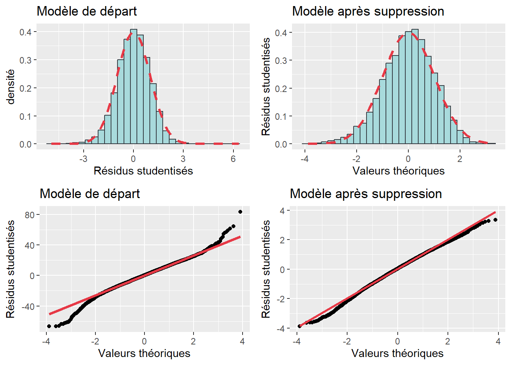
Le problème d’hétéroscédasticité est-il corrigé?
- la valeur du test de Breusch-Pagan est beaucoup plus faible, mais il semble persister un problème d’hétéroscédasticité.
studentized Breusch-Pagan test
data: modele3
BP = 1651.5, df = 7, p-value < 2.2e-16bptest(modele3b)
studentized Breusch-Pagan test
data: modele3b
BP = 640.53, df = 7, p-value < 2.2e-16resmodele3 <- residuals(modele3)
resmodele3b <- residuals(modele3b)
ypredits3 <- modele3$fitted.values
ypredits3b <- modele3b$fitted.values
G1 <- ggplot() +
geom_point(aes(x = ypredits3, y = resmodele3),
color = "#343a40", fill = "#a8dadc", alpha = 0.2, size = 0.8) +
geom_smooth(aes(x = ypredits3, y = resmodele3), method = lm, color = "red")+
labs(title = "Modèle de départ",x = "Valeurs prédites", y = "Résidus studentisés")
G2 <- ggplot() +
geom_point(aes(x = ypredits3b, y = resmodele3b),
color = "#343a40", fill = "#a8dadc", alpha = 0.2, size = 0.8) +
geom_smooth(aes(x = ypredits3b, y = resmodele3b), method = lm, color = "red")+
labs(title = "Modèle après suppression",x = "Valeurs prédites", y = "Résidus studentisés")
ggarrange(G1, G2, ncol = 2, nrow = 1)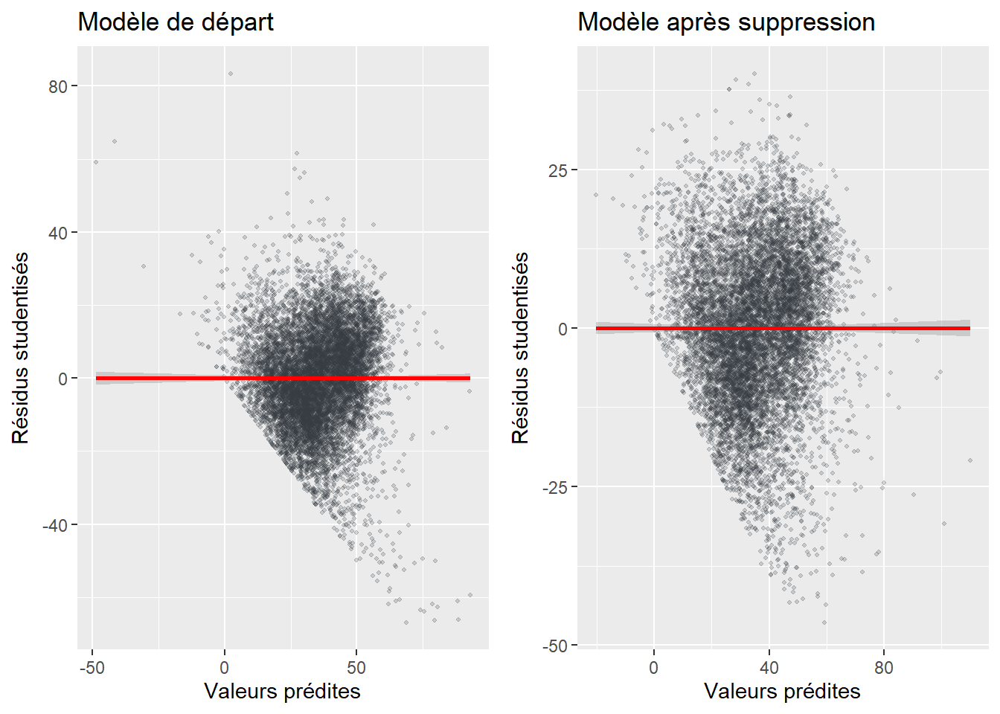
Finalement, il convient de comparer les coefficients de régression.
# Comparaison des coefficients
summary(modele3)
Call:
lm(formula = VegPct ~ log(HABHA) + poly(AgeMedian, 2) + Pct_014 +
Pct_65P + Pct_MV + Pct_FR, data = DataFinal)
Residuals:
Min 1Q Median 3Q Max
-66.848 -8.660 0.381 8.961 83.269
Coefficients:
Estimate Std. Error t value Pr(>|t|)
(Intercept) 5.283e+01 1.001e+00 52.781 < 2e-16 ***
log(HABHA) -6.855e+00 1.683e-01 -40.730 < 2e-16 ***
poly(AgeMedian, 2)1 1.198e+01 1.559e+01 0.769 0.441958
poly(AgeMedian, 2)2 -2.861e+02 1.394e+01 -20.525 < 2e-16 ***
Pct_014 9.406e-01 3.126e-02 30.093 < 2e-16 ***
Pct_65P 3.062e-01 1.851e-02 16.546 < 2e-16 ***
Pct_MV -3.630e-02 9.943e-03 -3.651 0.000262 ***
Pct_FR -3.443e-01 1.103e-02 -31.212 < 2e-16 ***
---
Signif. codes: 0 '***' 0.001 '**' 0.01 '*' 0.05 '.' 0.1 ' ' 1
Residual standard error: 13.57 on 10202 degrees of freedom
Multiple R-squared: 0.4657, Adjusted R-squared: 0.4653
F-statistic: 1270 on 7 and 10202 DF, p-value: < 2.2e-16summary(modele3b)
Call:
lm(formula = VegPct ~ log(HABHA) + poly(AgeMedian, 2) + Pct_014 +
Pct_65P + Pct_MV + Pct_FR, data = DataSansOutliers)
Residuals:
Min 1Q Median 3Q Max
-46.417 -7.734 0.456 8.290 40.085
Coefficients:
Estimate Std. Error t value Pr(>|t|)
(Intercept) 6.748e+01 9.869e-01 68.370 < 2e-16 ***
log(HABHA) -1.000e+01 1.720e-01 -58.167 < 2e-16 ***
poly(AgeMedian, 2)1 4.357e+01 1.387e+01 3.142 0.00168 **
poly(AgeMedian, 2)2 -3.564e+02 1.250e+01 -28.510 < 2e-16 ***
Pct_014 8.351e-01 2.870e-02 29.101 < 2e-16 ***
Pct_65P 2.271e-01 1.807e-02 12.566 < 2e-16 ***
Pct_MV -8.517e-03 9.109e-03 -0.935 0.34976
Pct_FR -2.924e-01 1.028e-02 -28.440 < 2e-16 ***
---
Signif. codes: 0 '***' 0.001 '**' 0.01 '*' 0.05 '.' 0.1 ' ' 1
Residual standard error: 11.96 on 9917 degrees of freedom
Multiple R-squared: 0.5687, Adjusted R-squared: 0.5684
F-statistic: 1868 on 7 and 9917 DF, p-value: < 2.2e-167.7.4 Graphiques pour les effets marginaux
Tel que signalé ultérieurement, il est courant de représenter l’effet marginal d’une VI sur une VD, une fois contrôlées les autres VI. Pour ce faire, il est possible d’utiliser les packages ggplot2 et ggeffects.
7.7.4.1 Effet marginal pour une variable continue
La syntaxe ci-dessous illustre comment obtenir un graphique pour nos quatre variables explicatives. Bien entendu, si le coefficient de régression est positif (comme pour les pourcentages de jeunes de moins de 15 ans et les personnes âgées), la pente est alors montante, et inversement descendante pour des coefficients négatifs (comme pour les personnes ayant déclaré appartenir à une minorité visible et les personnes à faible revenu). En outre, plus la valeur absolue du coefficient est forte, plus la pente est prononcée.
library(ggplot2)
library(ggeffects)
library(ggpubr)
# Création d'un DataFrame pour les valeurs prédites pour chaque VI continue
fitV1 <- ggpredict(modele3, terms = "Pct_014")
fitV2 <- ggpredict(modele3, terms = "Pct_65P")
fitV3 <- ggpredict(modele3, terms = "Pct_MV")
fitV4 <- ggpredict(modele3, terms = "Pct_FR")
# Construction des graphiques
G1 <-ggplot(fitV1, aes(x, predicted)) +
# ligne de régression
geom_line(color = "red", linewidth = 1) +
# intervalle de confiance à 95 %
geom_ribbon(aes(ymin = conf.low, ymax = conf.high), alpha = .3)+
# Titres
labs(y = "valeur prédite Y", x = "Moins de 15 ans (%)")
G2 <-ggplot(fitV2, aes(x, predicted)) +
geom_line(color = "red", linewidth = 1) +
geom_ribbon(aes(ymin = conf.low, ymax = conf.high), alpha = .3)+
labs(y = "valeur prédite Y", x = "65 ans et plus (%)")
G3 <-ggplot(fitV3, aes(x, predicted)) +
geom_line(color = "blue", linewidth = 1) +
geom_ribbon(aes(ymin = conf.low, ymax = conf.high), alpha = .3)+
labs(y = "valeur prédite Y", x = "Minorités visibles (%)")
G4 <-ggplot(fitV4, aes(x, predicted)) +
geom_line(color = "blue", linewidth = 1) +
geom_ribbon(aes(ymin = conf.low, ymax = conf.high), alpha = .3)+
labs(y = "valeur prédite Y", x = "Personne à faible revenu (%)")
# Assemblage des graphiques
ggarrange(G1, G2, G3, G4, ncol =2, nrow =2)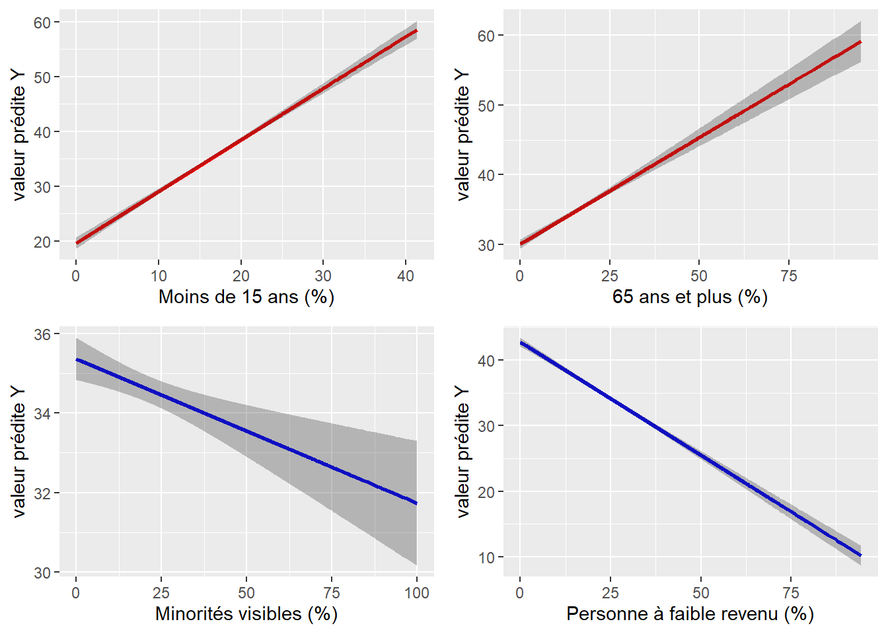
7.7.4.2 Effet marginal pour une variable avec une fonction polynomiale d’ordre 2
library(ggplot2)
library(ggeffects)
library(ggpubr)
fitAgeMedian <- ggpredict(modele3, terms = "AgeMedian")
ggplot(fitAgeMedian, aes(x, predicted)) +
geom_line(color = "green", linewidth = 1) +
geom_ribbon(aes(ymin = conf.low, ymax = conf.high), alpha = .3)+
labs(title = "Variable sous forme polynomiale (ordre 2)",
y = "VD: valeur prédite", x = "Âge médian des bâtiments")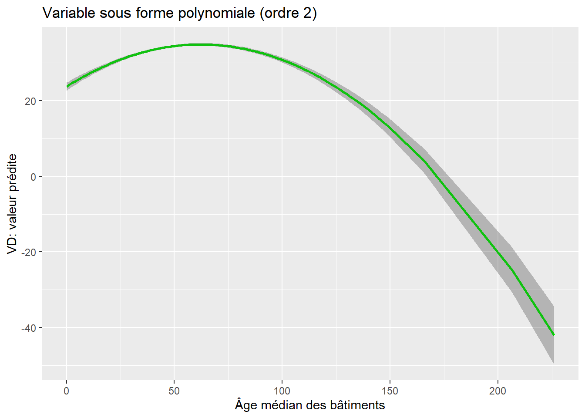
7.7.4.3 Effet marginal pour une variable transformée en logarithme
7.7.4.4 Effet marginal pour une variable dichotomique
# Valeurs prédites selon le modèle avec la variable dichotomique
fitVilleMtl <- ggpredict(modele4, terms = "VilleMtl")
# Graphique
ggplot(fitVilleMtl, aes(x = x, y = predicted)) +
geom_bar(stat = "identity", position = position_dodge(), fill = "wheat") +
geom_errorbar(aes(ymin = conf.low, ymax = conf.high), alpha = .9, position = position_dodge())+
labs(title = "Effet marginal de la ville de Montréal sur la végétation",
x = "Municipalités de la région de Montréal",
y = "Couverture végétation de l'îlot (%)")+
scale_x_continuous(breaks=c(0,1),
labels = c("Autre municipalité", "Ville de Montréal"))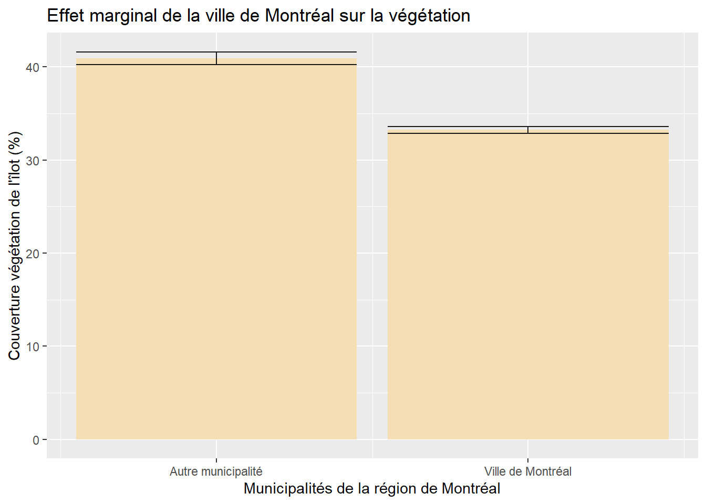
7.7.4.5 Effet marginal pour une variable polytomique
# Valeurs prédites selon le modèle avec la variable polytomique
fitVilles <- ggpredict(modele5, terms = "Munic")
# Graphique
Graphique <- ggplot(fitVilles, aes(x = x, y = predicted)) +
geom_bar(stat = "identity", position = position_dodge(), fill = "wheat") +
geom_errorbar(aes(ymin = conf.low, ymax = conf.high), alpha = .9, position = position_dodge())+
labs(title = "Effet marginal de la ville de Montréal sur la végétation",
x = "Municipalités de la région de Montréal",
y = "Couverture végétation de l'îlot (%)")
# Rotation du graphique
Graphique + coord_flip()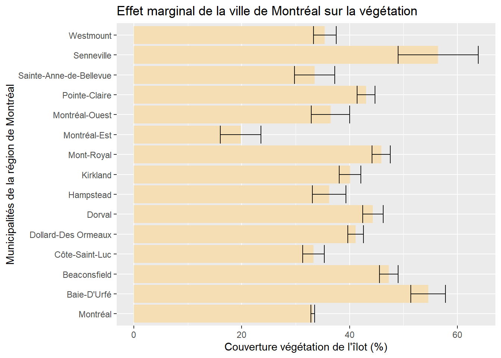
7.7.4.6 Effet marginal pour une variable d’interaction (deux VI continues)
library(metR) # pour ajouter des labels aux contours
df <- expand.grid(
DistCBDkm = seq(0,33,0.1),
Pct_FR = seq(0,95,1),
HABHA = mean(DataFinal$HABHA),
AgeMedian = mean(DataFinal$AgeMedian),
Pct_014 = mean(DataFinal$Pct_014),
Pct_65P = mean(DataFinal$Pct_65P),
Pct_MV = mean(DataFinal$Pct_MV)
)
df$DistCBDkmX_Pct_FR <- df$DistCBDkm * df$Pct_FR
pred <- predict(modele6, newdata = df, se = TRUE)
df$pred <- pred$fit
df$pred_se <- pred$se.fit
df$lower <- df$pred - 1.96 * df$pred_se
df$upper <- df$pred + 1.96 * df$pred_se
P1 <- ggplot(data = df) +
geom_tile(aes(x = DistCBDkm, y = Pct_FR, fill = pred)) +
stat_contour(aes(x = DistCBDkm, y = Pct_FR, z = pred),
color = "black", linetype = "dashed") +
geom_text_contour(aes(x = DistCBDkm, y = Pct_FR, z = pred), )+
scale_fill_viridis(discrete = FALSE) +
labs(x = "Distance au centre-ville",
y = "Pers à faible revenu (%)",
fill = "",
subtitle = "Prédiction")
P2 <- ggplot(data = df) +
geom_tile(aes(x = DistCBDkm, y = Pct_FR, fill = lower)) +
stat_contour(aes(x = DistCBDkm, y = Pct_FR, z = lower),
color = "black", linetype = "dashed") +
geom_text_contour(aes(x = DistCBDkm, y = Pct_FR, z = lower), )+
scale_fill_viridis(discrete = FALSE)+
labs(x = "Distance au centre-ville",
y = "Pers à faible revenu (%)",
fill = "",
subtitle = "IC 2,5 %")
P3 <- ggplot(data = df) +
geom_tile(aes(x = DistCBDkm, y = Pct_FR, fill = upper)) +
stat_contour(aes(x = DistCBDkm, y = Pct_FR, z = upper),
color = "black", linetype = "dashed") +
geom_text_contour(aes(x = DistCBDkm, y = Pct_FR, z = upper), )+
scale_fill_viridis(discrete = FALSE)+
labs(x = "Distance au centre-ville",
y = "Pers à faible revenu (%)",
fill = "",
subtitle = "IC 97,5 %")
ggarrange(P1, P2, P3, common.legend = FALSE, ncol = 2, nrow = 2)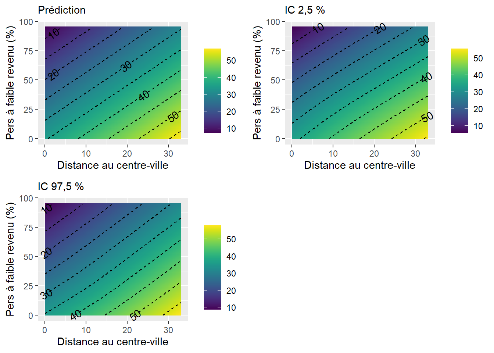
7.7.4.7 Effet marginal pour une variable d’interaction (une VI continue et une VI dichotomique)
df <- expand.grid(
VilleMtl = c(0,1),
Pct_FR = seq(0,95,1),
HABHA = mean(DataFinal$HABHA),
AgeMedian = mean(DataFinal$AgeMedian),
Pct_014 = mean(DataFinal$Pct_014),
Pct_65P = mean(DataFinal$Pct_65P),
Pct_MV = mean(DataFinal$Pct_MV)
)
df$VilleMtlX_Pct_FR <- df$VilleMtl * df$Pct_FR
head(df, n=5) VilleMtl Pct_FR HABHA AgeMedian Pct_014 Pct_65P Pct_MV VilleMtlX_Pct_FR
1 0 0 87.7694 52.11494 15.89268 14.86761 20.96675 0
2 1 0 87.7694 52.11494 15.89268 14.86761 20.96675 0
3 0 1 87.7694 52.11494 15.89268 14.86761 20.96675 0
4 1 1 87.7694 52.11494 15.89268 14.86761 20.96675 1
5 0 2 87.7694 52.11494 15.89268 14.86761 20.96675 0pred <- predict(modele7, se = TRUE, newdata = df)
df$pred <- pred$fit
df$upper <- df$pred + 1.96*pred$se.fit
df$lower <- df$pred - 1.96*pred$se.fit
df$VilleMtl_str <- ifelse(df$VilleMtl==0,"Autre municipalité" , "Ville de Montréal")
DataFinal$VilleMtl_str <- ifelse(DataFinal$VilleMtl==0,"Autre municipalité" , "Ville de Montréal")
cols <- c("Autre municipalité" ="#1d3557" ,"Ville de Montréal"="#e63946")
ggplot(data = df) +
geom_point(data = DataFinal, mapping = aes(x = Pct_FR, y = VegPct, color = VilleMtl_str),
size = 0.2, alpha = 0.2)+
geom_ribbon(aes(x = Pct_FR, ymin = lower, ymax = upper, group = VilleMtl_str),
fill = rgb(0.1,0.1,0.1,0.4))+
geom_path(aes(x = Pct_FR, y = pred, color = VilleMtl_str), size = 1) +
scale_colour_manual(values = cols)+
labs(x = "Personnes à faible revenu (%)",
y = "Densité de végétation prédite (%)",
color = "")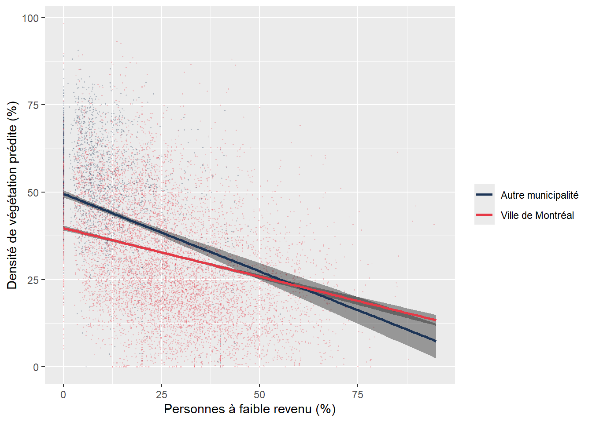
7.8 Quiz de révision du chapitre
Quelle mesure relative à la qualité d’ajustement du modèle indique la proportion de la variance de la variable dépendante expliquée par les variables indépendantes du modèle?
Relisez au besoin la section 7.3.1.
Le R2 ajusté permet de comparer des modèles avec des nombres de variables indépendantes et/ou d’observations différents
Relisez au besoin le début de la section 7.3.2.
Pour un nombre très élevé d’observations, quelle affirmation est vraie pour les valeurs de t et de p?
Relisez au besoin la [section Section 7.4.3).
Une variable indépendante dont l’intervalle de confiance à 95 % du coefficient de régression est de [-15,06 ; 28,17] est-elle significatif au seuil de p = 0,05?
Relisez au besoin la section 7.4.4.
Comment poser un diagnostic sur un modèle de régression linéaire?
Relisez le deuxième encadré à la section 7.6.